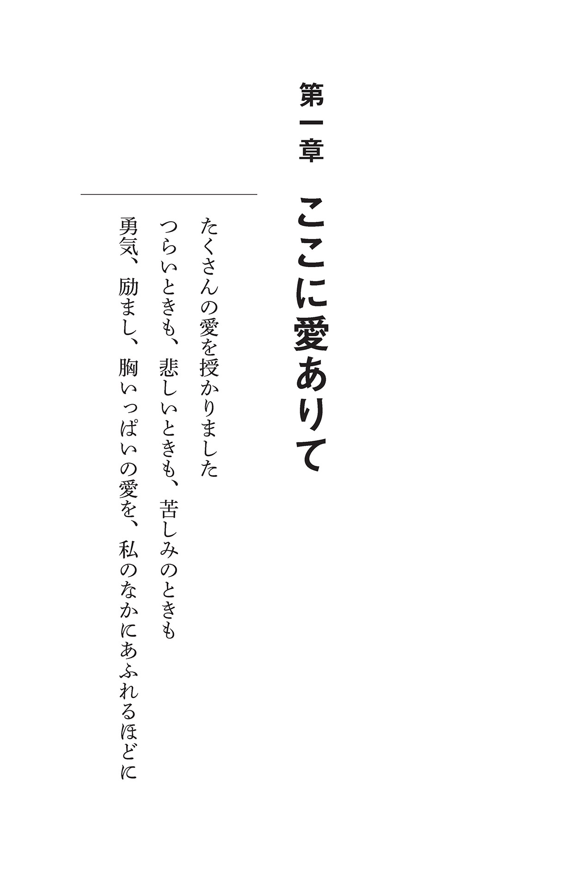
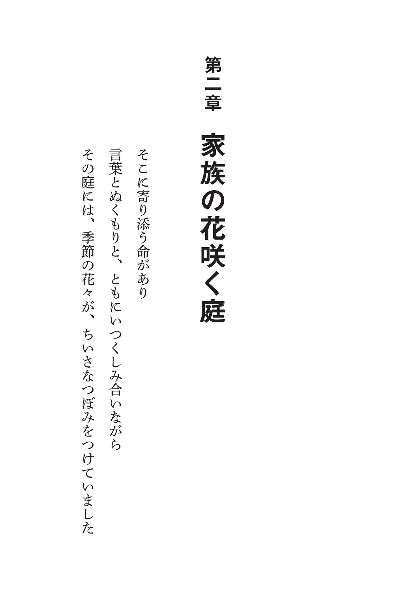
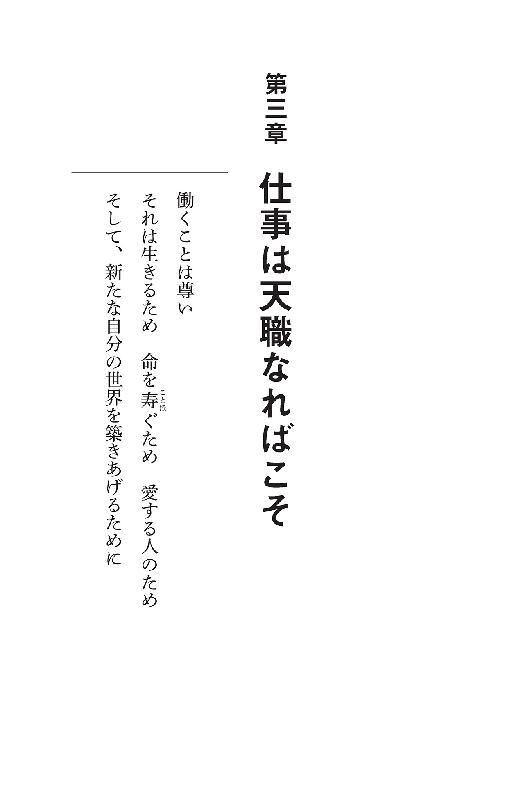
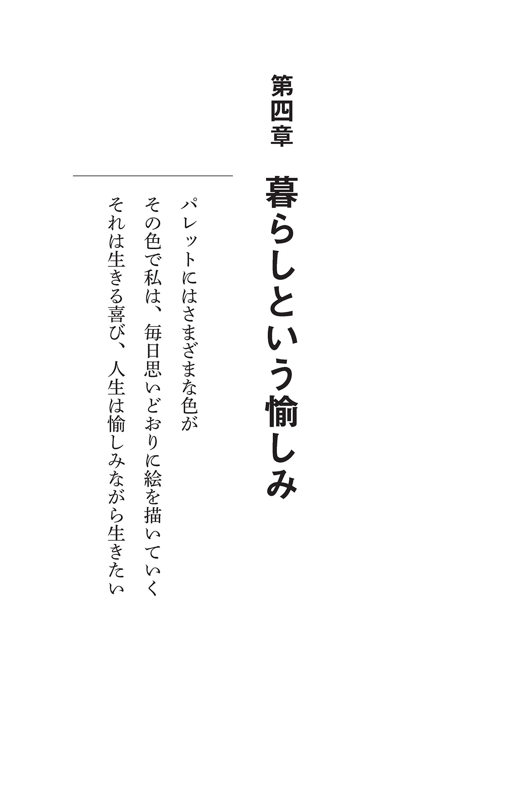
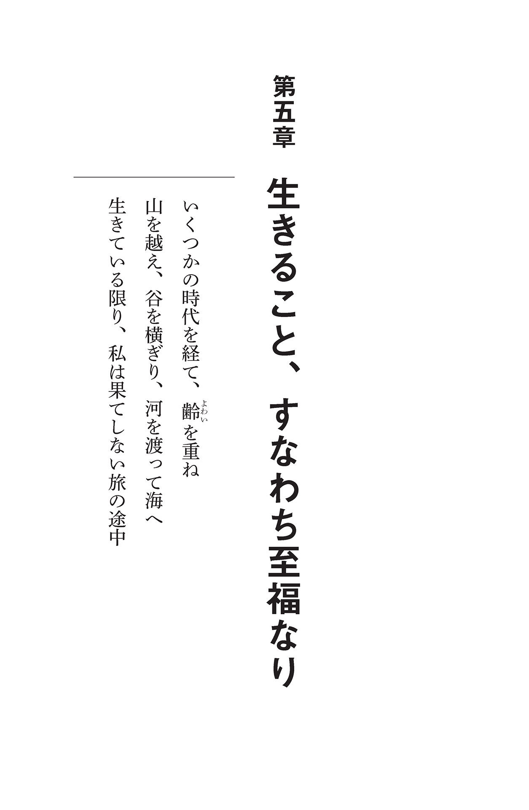

| あせらず、たゆまず、ゆっくりと。 (扶桑社ＢＯＯＫＳ) | |
| 赤木 春恵 | |
| 株式会社 扶桑社 (2017) | |
扶桑社
あせらず、たゆまず、ゆっくりと。──93 歳の女優が見つけた人生の幸せ
赤木春恵
はじめに
この本が出版される三月一四日に、私は九三歳の誕生日を迎えます。
若い日、ふと自分の年老いた姿を漠然と想像していた齢 を、とうに過ぎている気がしています。まさか、自分がこれほど長寿を生きることになろうとは夢にも思っていませんでした。ゆっくりと歩いてきた人生を思い返せば、感謝の思いがしみじみと湧いてきます。
とくに、心を痛めずに振り返ることのできない、あの戦火のなか、命があることだけでも奇跡のような二〇歳の私に、そこから七〇年以上もの生きる時間を神様は与えてくださったことになります。
しばらく前、私は「これまでの人生のなかで、印象に残った言葉や思い出を本にして出版なさいませんか」とのご依頼をいただきました。
まず率直に思ったことは、とんでもない、自分の人生を振り返り、ノスタルジーにひたりお話ししたところで、ほかの方々からすれば退屈にほかならないし、人様に語るようなこれといった話もないような気がしました。
元来、説明することは下手。取材などを受けることも苦手。いままで、私のところに来てくださった記者の方々には、「そちらでまとめていただけませんか」「私はだいたいでいいんです」などと、どれほど失礼であったかもわかりません。
ただ、今回、そのお話をいただいたときの私の状況は、一昨年（平成二七〔二〇一五〕年） 大 腿 骨 を骨折し、元々悪かった足が決定的に使えなくなり、趣味だった自室の整理整頓も、愛犬と遊ぶこともできなくなったという状況で、考えごとをする時間だけが、たっぷりすぎるくらいに残されていました。
とはいえ、九三年の日々を振り返り、思い出すことは容易ではありません。
記憶や思い出といっても、断片的で、悲しかったり、嬉しかったり、怖かったり、残念だったり、順序もバラバラ、なんの筋立てもないように思えます。
そんななかでも強く思うことは、人との出逢いに恵まれ、ああ、どうしようと、途方にくれたとき、いつもどなたか背中を押してくれた方々が間違いなくいてくださったということ。力をいただき、手を差し伸べてくださる方がいたから、私の九三年があるということです。
終戦七〇年を越えてから、実際に当時を語る方が少しずついなくなり、私のもとには、語り継ぐことの依頼が多く寄せられるようになりました。
そのたび、良い返事をしない私に、娘から「ママ、辛いだろうけど、繰り返してはいけない戦争を、〝本当に心底ダメ〟と言えるのは、そのときを生きた人しかいないのよ。その人からしか生まれない言葉なんだから、断ってはダメ」と、背中を押され、渋々頷 いてきました。
そんなことも思い出し、熱心に、このような私でよいと出版を依頼してくださるお気持ちをいただき、この歳まで歩んでこられた私のなかで、心に残る人との出逢い、〝力〟をいただいた言葉や出来事を綴 ってみようか、と思うに至りました。
おそらく、これが私の人生で、最後の「背中を押してもらう」エピソードになるでしょう。
私が八〇年近くになる女優人生で学ばせていただいたこと、人生の希望や、生きる礎となったことなど、時間をかけて思い出しては綴ったこのささやかな本が、お読みいただく方のお役に少しでも立てるのなら、これほどの喜びはありません。
平成二九（二〇一七） 年早春
赤木春恵

心友は人生の宝物
この世界で、心から親友と呼べる人を持つというのは奇跡に近いことかもしれません。一度会ってすぐに友達になれることもありますが、親しくなっても心を許すというところまで深い付き合いができる人には、なかなか会うことができないからです。
長く生きてきた私には、素晴らしい友人は数多くいますが、親友、そのなかでも心を裸にして付き合うことのできる、「心友」と呼べる貴重な友が、いまは天国にいる女優の森光子さんです。
私が女優デビューしたのはいまから七七年前の昭和一五（一九四〇） 年のこと。翌年には、太平洋戦争が始まりました。そんななか、のちに大の親友となる森光子さんとの運命の出逢いがあったのです。私は一六歳、森さんは二〇歳でした。日中戦争が始まって、戦意高揚のための戦争映画が数多く作られていた時代です。
当時、映画会社は合同慰問団を組織し、貨物用のトラックで、全国の師団、部隊、軍需工場などを回り、兵隊さんたちを慰問する演劇活動を行っていました。
森さんはすでに新興キネマのスターで、私は松竹のニューフェイスとして入社したばかりの新人でした。
慰問団のトラックの上で、私たちは出逢ったのです。
黒いワンピースを着て、チュールの付いた黒い帽子を被った女性。狭い荷台の雑然とした光景のなかで、彼女だけがまるで別の世界にいるようにパッと輝いて見えて、私は息を吞 みました。そのとき、彼女と目が合い、私は思わず話しかけました。
「松竹の赤木春生（当時の芸名・はるみ） と申します」
「私、森光子です。どうぞよろしく」
森さんはすでに可 憐 な娘役スターとして脚光を浴びていましたが、ちっとも威張ったところがなく、なんて素敵な女優さんだろうと、いっぺんに憧れと親しみを抱きました。
慰問先でも、私は大勢の女優のなかの一人として舞台に上がりましたが、森さんはマイクの前に一人で立ち、美しい声で歌謡曲を聴かせて、兵隊さんたちの視線を一身に集めていました。
そのうちに慰問する区域が広がり、私は満州へ、森さんは南方へと別れ別れになってしまいました。
終戦後、私たちは再会しました。
私はＮＨＫで横山エンタツさん主演のラジオドラマに出演していました。そのスタジオの前に、華 奢 な女性が立っていたのです。私は、「森さんは亡くなった」と風の便りに聞いて覚悟していたので、飛び上がるほど驚き、幽霊を見ているのではないかとすぐに足元を見たくらいでした。でも、彼女は生きていてくれたのです。もう、言葉にならなくて、お互いを抱き合って、ただただ声を上げて泣きました。
黒いワンピースを着ていたころとは違って、ずいぶん痩 せた体。彼女も戦争中、何度も命を落とす危険に晒 され、戦後は肺結核で長く療養していたのです。森さんは、ＮＨＫを訪ねてきた折に、私がラジオの生放送中だと聞き、スタジオまでやってきてくれたのでした。
すぐに連絡先を交換し、ＮＨＫの部長にも「森さんと一緒にやりたい」と頼んで、一緒に『エンタツの名探偵』をやることになりました。
森さんの本名は村上美 津 、私は小田章 子 。まもなく、「みっちゃん」「あやちゃん」と本名で呼び合うようになっていました。
お互い京都に住んでいることがわかると、それからは行きも帰りも一緒。番組が終わると「謝金」と書かれた袋をもらいます。月四回で五四〇〇円のギャラです。二人とも貧乏でしたから嬉しくて、帰り道、京阪電車の四条駅で降りて、行きつけのトンカツ屋さんでいろんなことを話しました。
私の家に泊まりに来てくれた日、夜二人で銭湯に行ったことがあります。
帰り道、森さんがふと立ち止まったので「どうしたの」と聞くと、「あんまりお月様がきれいだから拝むの。いつもそうしているの」と言って、本当に手を合わせて月を拝んだのです。同じＢ型でも、私はそういう情緒的なセンスはありません。メイクを落とすのも、私は手早く大雑把に、彼女は丁 寧 に、丁寧に。性格が違う私たちだからこそ、お互い気が合ったのかもしれません。
戦後、結婚した私は、借りている家が手狭となり京都の御 室 に家を建てることになりました。そうしたら、森さんがやってきて封筒を差し出すのです。
「あやちゃん、お金がいるでしょう？ 私、いまはあってもなくてもいいの、だから、あなたが使って」
封筒のなかを見ると、一〇〇万円の小切手でした。それは芸能界に復帰したばかりの彼女が初めて朝日放送と契約を結んだときの、大切な契約金だったのです。そんな大切なお金を、「困っている」と言ったわけでもないのに、すべてを察して、ぽんと貸してくれたのです。私はそれをありがたくお借りしました。返せたのは、余裕ができた数年後のことです。
いまのように豊かな時代ではありません。終戦後すぐで、日本中が貧乏で大変な時代でした。そんな状態は森さんも同じはずです。銀行に預ければ利子だってつくのに、私からお願いしたわけでもないのに......。そんな気遣いをしてくれた彼女の優しさを、私は一生忘れません。
芸能界に復帰してからの森さんは、どんどん活躍の場を増やしていきました。お芝居が菊田一夫さんに認められ、芸術座のお芝居に呼ばれたのです。
「あやちゃん、実は私、東京からのお呼びがあるの。でも、東京へ行くのは少し不安なのだけど、どう思う？」と相談を受けた私は、「みっちゃん、思いっきりやるべきよ。大丈夫、心配しないで」と答えました。
東京の舞台で好演した森さんは、それから菊田さんが書き下ろした『放浪記』で初主演、一気に誰もが知る女優として花開いていきます。
「あやちゃんはのんびりしすぎている！ 遅い遅い」
「もっともっと前に出なさいよ」
いつも私の背中を押して、叱 咤 激 励 してくれるのは森さんでした。
森さんとはお互いに何も言わなくても心が通じ合っていたように思います。会ってもたくさんおしゃべりをするわけじゃない。でも、顔を見て目が合えば、それだけで気持ちが伝わる気がする。何かあると、そっと励まし支えてくれるのはいつも彼女でした。
私たちは、休みには一緒に旅行に行き、一緒に仕事をすることもありました。『おもろい女』『桜月記』『新橋ラプソディー』『春は爛漫』など、舞台も共演しました。私が日比谷で芝居をしていれば、二人で劇場脇の帝国ホテルに泊まり、時間の限りおしゃべりをすることも楽しみでした。
スポーツ新聞のインタビューを受けたとき、森さんが私についてコメントを寄せてくれました。
「会うと、『あやちゃん』『みっちゃん』と呼び合う、大の仲良しです。旦那さんを支え、子育てもしっかりとやって、お孫さんの面倒もよくみる。家庭的なことをすべてこなす主婦感覚を持つ、素晴らしい女優さんです。楽屋でもいろいろな美 味 しい料理を作ってくれて、食べるのが楽しみでした。出会って六〇年以上過ぎたけれど、一緒に女優を続け、いまも女優でいられるのも、お互い長生きしたからこそと嬉しいですね。あやちゃんには何でも正直に遠慮なくモノを言える。何でも受け止めてくれるんです。あやちゃんと一緒にいると、ホッとして、温かい幸せを感じるんです」
彼女との思い出は、胸が温かくなるものばかりです。
五〇代のころでしょうか、私は彼女への手紙にこう書いたことがあります。
「みっちゃん、私はあなたの心友です。親友はほかにもいるけれど、心友はあなただけです」
私にとって心友とはソウルメイト、心を許し合っている友人のこと。一生を通じて、心を許し合える友人、それは私にとって森さんでした。
彼女はその言葉をずっと大切に覚えていてくれました。それから三〇年ほど後、森さんが私にくれた手紙に、こんな言葉がありました。「なんだか少女のようだなと思いますが、心友というあなたの言葉、一番大切にします」
みっちゃん、あなたはいつも少女のように純粋で優しい心を持つ、素敵な女性でした。いつまでも、私の大切な心の友です。
人とのめぐり逢いによって運命が変わる
これまでの私の人生を振り返ってみると、人との出逢いの大切さをしみじみと感じます。素晴らしい出逢いがたくさんあったからこそ、いまの私がいる。人はそのめぐり逢いによって、人生が左右されると思います。その出逢いが素晴らしければ素晴らしいほど、それが道 標 となり、特別の運を運んでくれるのです。
森繁久彌さんには東京での仕事のきっかけをつくっていただきました。そして、脚本家の山田太一さんには、テレビへの道をつくっていただきました。それから脚本家の橋田壽賀子さんと出逢い、橋田さんにはさらに私が大きく羽ばたくきっかけをつくっていただきました。それから演出家でプロデューサーの石井ふく子さん、脚本家の小 山 内 美江子さんと出逢って。このほかにもまだまだたくさんの方に出逢い、たくさんのきっかけをいただきました。
こうしたいくつもの素敵な出逢いが役者としての私を浮上させてくれたのです。こういう方たちとの出逢いがなかったら、まったく違う私が存在していたと思うと、感謝の言葉しかありません。
「たくさんの出逢いのうち、赤木さんにとって、どの出逢いが最も重要だったと思いますか」
そんな質問を受けることがあります。
しかし、それに答えるのは不可能です。どの出逢いも私はないがしろにできませんし、あの出逢いがあったからこそ、あの人に出逢った、そしてまたその出逢いがあったからこそ、次のあの方に出逢えた。出逢いとはこのように、次々に広がっていくものなのですから。
森繁さんと出逢い、森繁劇団に参加しなければ、上京することはありませんでした。それがなかったら、ドラマ『藍より青く』に出演することもなかったでしょう。この番組に出ていなければ、橋田壽賀子さんが私に目を留められることもなかったでしょう。
私が、橋田壽賀子さんと初めて出逢ったのは五〇歳のころでした。
森光子さんが長年にわたって演じていた舞台『放浪記』は公演のたびに観に行っていました。でも、その日は、どうしても体調がすぐれないので、行くかどうしようか迷ったのです。でも、森さんの舞台です。体に鞭 を打って出かけました。
そうして芸術座に舞台を見にいき、休憩時間のこと。「おかあさん」と宇津井健さんに声をかけられ、その隣に座っていらしたのが、橋田さんだったのです。そのときが初対面で、宇津井さんに紹介していただきました。
そうしたら、橋田さんが、「今度のドラマ、あなたのことをイメージして脚本書いているんですよ。出てくださる？」といきなりおっしゃいました。たしかに、そのころ、ＮＨＫから「ドラマ『四季の家』に」という話はあったのですが、漠然としたものでした。そのドラマの脚本家から直 に声をかけていただいたのですから信じられない気持ちでした。
プロデューサーに電話するのは勇気が要りました。図々しすぎないかしら、と。でも、どうしてもやりたいお仕事でしたし、脚本家がこう言ってくださっているのだからと一大決心して、思い切って電話をしたのです。
「えっ、橋田先生、赤木さんに直接おっしゃったの。じゃあ、お願いします」と言われ、四代の女性だけの家族の祖母役を演じることになったわけです。
それ以来、『おんな太閤記』『おしん』『いのち』、そして『渡る世間は鬼ばかり』など、橋田さんの作品に次々と出演させていただきました。橋田さんとのお付き合いは四〇年以上にも及び、橋田脚本なくしてはいまの私はありません。
また、橋田さんを通じて、公私共に信頼する石井ふく子さんとの出逢いがありました。
もし、このときの出逢いがなかったら......。
本当に私の人生は、人との出逢いによって開けてきたのです。人と人との出逢いがあればこそ、数え切れない人たちから数え切れないほどの愛をもらって、いまの自分がある、素晴らしい出逢いに感謝をしています。
どんなに苦しくても、その先には必ず希望が待っている
昭和二〇年の二月、戦争が激しさを増すなか、満州で慰問劇団を主宰していた次兄を追って、駆け出しの女優だった私は生まれ故郷でもある満州に渡りました。ところが満州での再会もつかの間、兄はまもなく軍隊に召集されてしまったのです。
残された十数人の劇団員に勧められ、当時二〇歳にもならない私が、兄の代わりに劇団の団長を務めることになりました。
私たちが満州各地で慰問や公演を続けること半年、日本は終戦を迎えました。それからは、それまで想像もしていなかったような苦難の生活が始まったのです。
当時、満州にいた多くの日本人は常に死と隣り合わせの状況下にありました。
最大の恐怖は、終戦直後、ソ連が攻め込んできたことです。当時住んでいた同じ建物の三階まではソ連の進駐軍が、五階は私たち慰問劇団の宿舎になっていました。
戦争は人間の影の部分を露 わにします。兵士たちは若い女性が目当てで、夜になると襲ってくると恐れられていました。抵抗すればその場で銃殺されると。
夜、トントンとドアをノックする音がします。
私がドアを開けると、ソ連兵が部屋を覗 きます。すると、電気を暗くしたなか、髪を真っ白にした老婆たちがうずくまっています。皆で示し合わせて泥を顔に塗り、髪を白く染め、化粧をして老婆に変身していたのです。それを見て彼らは、これはダメだと立ち去るのでした。
敗戦後、満州にいた若い男性たちはシベリアに連行されてしまい、残された女性たちが助け合って生きていかなくてはなりませんでした。日本人同士が集まり、自然とコミュニティができていました。
どこかの社長夫人も、駆け出しの女優も、あるゆる立場の人たちが個々の壁を越えて協力し、助け合わなければ生きていけない時代でした。
老人や病人は働けませんから、働ける人は働いて、子供のいる女性は家事を、洋裁のできる人はダンスホールで働く女性のためのドレスを生地を縫って作り、収入も皆で分け合って生きていました。
私もダンサーのほかに、いろいろな仕事をしました。中国人の洋裁店でミシンを踏み、中国料理店で給仕をし、現地の劇団の手伝いもしました。
当時多くの人の命を奪った、発疹チフスにかかったこともあります。何日も高熱でうなされていた私のもとに、現地の劇団の中国人の俳優さんが山鳩を抱えてお見舞いに来てくれました。中国では、生きている鶏の胸を切り裂いて患者の胸にあてると、熱を吸い取ってくれると言われていました。鶏が入手できないので代わりに山鳩を持って来てくれたのです。山鳩が可哀想だと拒否する私を、日本人の仲間たちも「生き抜いてほしい」との一心で押さえつけました。胸を裂いた山鳩を胸に当てられ、私はふるえながら、「私は絶対に死なない、生き抜いてみせる」と必死に恐怖に耐えていました。
しかし熱は引かず、やがて発疹チフスであることがわかると、廃校のような隔離施設に移されました。そこで次々と亡くなる人を目の当たりにし、脳症を起こして死線を彷徨 いました。薬はなく、生きられるかどうかは、その人の生命力にかかっていました。長い入院の後、どういうわけか私は生き延びることができたのです。
終戦から一年以上が過ぎた昭和二一年の一〇月、満州からの引き揚げがようやく始まりました。そこからさらなる試練が待ち受けていたのです。
戦争は二度と起こってほしくないと心の底から思います。絶対に繰り返してはなりません。
戦争から学んだことがあるとすると、それは戦争に限りませんが、どんな厳しい状況下であれ、人間は何が何でも生き抜くという信念、執念を持ち続けることが大切だということです。人間は与えられた命を全 うするために生まれたのだと思います。生きてさえいれば、どんなに苦しくてもきっと、夜明け前の空が一番暗いというように、その先には必ず希望が待っています。
極限の状況下、人間の恐ろしさと温かさを知った
終戦後の満州を「激動の時代でしたね」と言われることがよくあります。でも私は激動を感じる余裕すらなく、いつ起きて、いつ寝たのかも覚えていないほど、無我夢中、生きるだけで精一杯の日々でした。
引き揚げが始まった昭和二一年一〇月、私だけでなく皆が、一 縷 の生きる望みにすがりついて必死に生きていました。引き揚げの道中、泣く泣く我が子を殺したとか、中国人に子供をあずけてきたとかいう悲しい話はいくらでもありました。
夜は凍るように寒いし、昼は焼けるように暑い。
そのなかを私たちは、病人も、子供をおぶっている人も、ただひたすらに歩きました。歩き続けるうちに疲れ切り、荷物が重くなると、一つ、また一つと捨てていきました。しまいには、パンや米なども捨てられていました。
結局、私が最後まで持っていられたのは、冬物と夏物の服が一着ずつ、薄い真綿を入れたふとん一枚、アルミの食器二個、そんなものだけでした。
私たちのグループが、新京の収容所を出て、いよいよ奉天の収容所に移るというその日に、私は偶然にも現地召集された次兄を見つけました。何日もさまよってきたらしく、カーキ色の元軍服はボロボロ。ガリガリにやせ衰えて、いまにも死にそうなほど衰弱していました。次兄たちは終戦と同時に、死ぬような思いをして野越え山越え、ようやく新京にたどりついたということでした。すぐにでも兄を引き取りたかったのですが、軍隊にいる兄を勝手に一人だけ連れていくわけにはいきませんでした。
ところが、それから次兄とは再び、奉天でも、次の葫 蘆 島 の収容所でもすれ違うことになったのです。兄は、そのころには患っていた胸の病が相当ひどくなっていて、おそらく日本までもたないだろうということでした。それを聞き、私はなんとしてでも兄を一緒に連れて帰りたい、私の手で一目でいいから日本にいる母に会わせてあげたい、と思ったのです。
兵隊用の施設にいる兄を引き渡してもらうよう交渉すると、軍の部隊長は「ここにいる元兵士たちを慰問してくれるならあなたの希望をかなえましょう」と条件をつけてきました。
この条件さえクリアすれば、次兄は私のところに帰ってこられる。でも、困ったことに、舞台衣装も化粧道具も何もかも、演劇に必要な道具は、逃げる途中でみんな捨ててきています。何もないなかで、私たちに何ができるというのでしょうか。
私は困り果てて、私より五歳年下で当時一六歳だった藤山寛美さんに相談しました。のちに喜劇役者としてスターになった寛美さんは、ハルビンでともに慰問劇を演じた仲間でした。すると、彼が東 奔 西 走 、皆に声をかけてくれて、なんとか慰問団の体裁を整えるくらいの道具を集めてくれたのでした。
そのおかげで、泉 鏡 花 原作の『婦 系 図 』を精いっぱい演じ、兵隊さんたちにも喜んでもらえましたし、無事次兄をとりもどすことができたのでした。
寛美さんがなんの損得も考えず私の力になってくれたことはありがたく、いまでも感謝の言葉もありません。
引き揚げ船で私たちと一緒に日本に帰り着いた喜びもつかの間、次兄は、母の住む京都の家で、衰弱しきって、私たちに看取られながらほどなくその短い生涯を終えました。
次兄は、私にとって父親代わりであり、映画の世界に私を導いてくれた恩人であり、そして世界中で一番心を許していた人だったのです。
なんのために私は生き抜いてきたのだろう。日本に帰りさえすれば、いつか兄の病も治って、再び好きな芝居の道で一緒に働けるかもしれない。きっと兄が監督する映画で、また好きな芝居が思い切りできるに違いない。そんな望みを抱いて、病で死の淵を彷徨ったり、飢えをしのいだりしながら、命からがらはるばる数百キロの道のりを旅してきたのでした。
「先に死んじゃったりして......、約束が違うじゃないの」
私は悔 しくて、悲しくて、思いきり声を上げて泣きました。涙も枯れ果てました。
満州での経験は悲惨としかいいようがありませんでした。二度と思い出したくない、恐ろしい記憶ばかりです。
その戦争に翻弄される日々のなかで、まだ年端もいかない藤山少年が、私の病の兄を軍隊から引き取るために、軍から課された難題に途方に暮れる私に「姉ちゃん！ やろう！」と背中を押して尽力してくれたこと。私は生涯忘れることはできません。そういう、人のために力を惜しまない温かさが、あの非情な時代に確かにあったのです。
新たな可能性を引き出してくれる師匠の存在が人生を変える
人生には教科書も正しい答えもありません。努力をしたからといってそれがすべて報われるとも限りません。それは芸能界も同じです。浮き沈みの激しい混沌とした世界、その荒波にのまれ、ややもすれば、絶望し、進むべき方向を誤ったり、見失うことだってあります。
そんなとき、人生を導いてくれる師匠と呼べる人の存在があれば、その背中を追うことで道を間違えないで進むことができる、と同時に新たな自分の可能性を引き出してもらえることがあるのです。
私が長きにわたり、女優を続けることができたのも、何人かの師匠とも言うべき人物の存在があったからです。その一人が俳優の森繁久彌さんです。
私の最初の芝居の師匠は次兄でした。
歯科医師の仕事を辞して、演劇の世界に飛び込んだ兄。その志と情熱は、私を女優の道に導き、彼が亡くなった後もなお、心のなかで生き続けています。
兄亡き後、私の役者人生をより深く、高く、築き上げて下さった森繁久彌さんとの出逢いは昭和三四年、森繁さんが結成した森繁劇団（当初は自由劇団） が、大阪で旗揚げ公演をするにあたり、私に出演の声がかかったことからでした。
私はその芝居のプロデューサーをたまたま存じあげていて、「急に出演できなくなってしまった女優さんの代わりに出演してほしい」と言われたのです。つまり、最初は代役としてでしたが、私に声がかかったのは、おそらく「関西在住で、出演料も安くて、急の間に合う人」という条件にぴったり合ったからでしょう。
森繁さんにはお会いしたことはありませんでしたが、素晴らしい役者さんだということは知っていました。満州から引き揚げが始まった昭和二一年当時、胡蘆島経由で帰国の引き揚げ船に乗るわけですが、何より、その胡蘆島に森繁さんがいらっしゃったのです。森繁さんがそこで何をされていたかというと、終戦前は満州の放送局でアナウンサーをなさったり、演劇活動を盛んにされていたのですが、戦後は日本人の引き揚げ者の代表のような役割をしていらしたそうです。
中国と日本人の間に入って、引き揚げを円滑に進める活動は並大抵ではなかったと思います。森繁さんは結局、最後の一人が引き揚げ船に乗り込むのを見届けてから、ご自分もその船に乗ったそうです。
そのときには、のちのちご縁ができるとは思ってもみませんでしたが、後に私の俳優人生を新しい世界に導いてくださったのは森繁さんなのです。戦争がとりもつ不思議な巡り合わせだと思えてなりません。
森繁劇団は、私が長年憧れ続けていた「リアルで自由な演技ができる」現代劇の集団です。私にとって、それまで演じ続けてきた時代劇の勧 善 懲 悪 、現実ではない世界を飛び出して、新しい世界で羽ばたくまたとないチャンスでした。
ただ、当時の私は出産後、女優復帰をしてまだ二年、娘はまだよちよち歩きの手のかかる赤ん坊です。それに時代劇の映画の仕事も二本抱えていました。そんな事情もあり、私は本心とは裏腹に、プロデューサーにいまはお引き受けできる状況ではないのですと、丁重にお断りの返事をしました。
しかし、何度お断りしてもそのプロデューサーは私のことを諦 めずにいてくださったのです。その方と何度も話を重ねるうちに、迷いながらも、森繁久彌という役者さんに会ってみたいという気持ちになりました。
森繁さんにお会いする前に、女優の道を踏み出したときから私のよき理解者であるマキノ雅弘監督に相談することにしました。時代劇を何本も撮っている巨匠が、私を時代劇の世界に引き止めてくれれば、断る決断がつきやすいと思ったのです。
意に反して、監督の答えは、「森繁という男は面白いよ、ぜひ一緒に演 ってみるといい」というものでした。
しかし人間の心とは奇妙なもので、監督には賛成してもらっても、やはり「誘いは断ろう」と内心、決めていました。主人にも、母にも、反対されていないのにです。
その日、私は正式にお断りするために、劇団の稽 古 場 に出かけました。すると、折しも、森繁さんの記者会見の場に遭遇することになったのです。
壇上に現れた森繁さんは、四〇代半ば、役者としても脂の乗り切っていたころ。まるで青年実業家か政治家のように、劇団結成にかける思いを澱 みなく、さわやかに語っていました。部屋の片隅で会見を聞いているうちに、こんなに素敵で詩人のようなインテリジェンスのある俳優さんがいたのかしら、と私はすっかり高揚した気持ちに包まれていました。
そうこうしているうちに、記者の方に、出演女優だと勘違いされて私はマイクを向けられました。
「前からぜひ出たいと思っておりましたけれど、機会をいただいた暁 には、一生懸命やらせていただきます」
反射的に、私は答えていました。
断りにいったはずが、なぜか直感的に、「この人についていけば間違いない」、そう確信したのです。
その日から、私の人生は大きく変わりました。
昭和三四年、東映を辞めてフリーになり、森繁劇団に参加しました。
そのために、主人は住み込みのお手伝いさんを探してくれ、母も娘の世話を引き受けてくれることになりました。
劇団の旗揚げ公演の舞台に立ったことは、役者人生の一大転機となりました。出演者一同が一丸となって、舞台を成功させよう、新しいものをつくろうと、ものすごい熱気で燃えに燃えていました。
森繁劇団の芝居はリアルさを追求するものでしたが、心でリアルな芝居ができていれば、型をくずしていくことが許される自由さがありました。
「これこそが私がやりたかった芝居だ」
私は、時代劇にはない芝居の新鮮さと醍 醐 味 に触れて天にものぼる気持ちでした。
「この人についていってみよう」
私は初めて、そう思える師匠と出逢えたのです。
舞台を重ねるごとに、森繁さんは私自身が気づかなかった役者としての可能性を引き出してくださいました。これでもかこれでもかと、いろいろな役を振り当てることで、私のなかからさまざまな女優の可能性を引き出してくれたのです。私もまた、森繁さんの演技、考え方を少しでも吸収したいと必死でした。
森繁さんは私を、女優として開眼させてくれました。
私は森繁さんの舞台の仕事を続けるためにも、住み慣れた京都を離れ、ときを同じくして東京の本社に転勤になった主人とともに、家族で東京に移り住むことになったのです。
その後、一〇年間、私は森繁劇団に参加し、森繁さんのもとで芝居に没頭しました。森繁さんがいなかったら、私は東京に出ることはなかったでしょう。東京に出なければ、京都の仁 和 寺 の鐘の音を聞きながら、子育ての傍ら、のんびり時代劇の女優を続けていたことでしょう。私のその後の女優人生も、いまとはずいぶん違ったものになっていたはずです。
あらためて、森繁久彌さんという「師匠」との出逢いに感謝をしています。
食べ物でつなぐ家族の心の絆
台所にご飯さえあれば、もしどなたかが急にいらしても食事を出してさしあげることができますよね。だから私は、炊飯器には常にご飯がたっぷり入っていないと心細くて嫌なんです。
仕事から帰ったら、必ず炊飯器のフタを開けて、ご飯が炊けているかしら、と確認します。戦時中のひもじさが骨身にしみついているんですね。
「お一ついかがですか」
早朝ロケがあれば、朝ご飯を食べないで来る人がいるかもと、おにぎりを差し入れしたり、舞台の楽屋で牛丼やカレーを作ってふるまうことも。それで、「赤木食堂」なんて皆さんに呼ばれていました。
「本当に足りる？」
食べる段になっても、全員が十分満足できる量かどうか、つい何度も確認してしまいます。差し入れも、一部の人しか食べられないのならしない、という考えです。戦前戦中戦後と、自分が食べたいときにろくすっぽ食べられなかったので、一緒にいる人全員のお腹の具合が気になって仕方がないのです。
戦後、満州からの引き揚げのとき、ソ連の軍隊が迫る間際、急きょ乗り込んだトラックで、自分たちはわずかな乾パンだけを持っていました。一緒に乗り合わせた日本の軍隊の人たちは食料をたくさん持ち込んで食べていました。
私たちは大人も小さな子供も、ひもじさを抱えて、彼らの食事をただ眺めていました。それは、とてもつらいものでした。
だから、赤木食堂では「お一ついかがですか」と皆に勧めて、できるだけ大勢で食べたいんです。全員に行き渡らないなら、仮に空腹でも、私は食べなくてもいいんです。
亡くなった母も、ご用聞きの人にまで「お腹はすいてないですか」「麦茶はいかが」と勧めていましたね。
「最後の食事に何が食べたいですか？」
あるとき、取材で尋ねられて迷わず私が答えたのは、母の卵焼きです。
昭和二一年一〇月二〇日、敗戦後の満州から、ようやく京都に住む母の元へ帰りました。そのとき、うす暗い卓袱 台 の上に母が用意していてくれたのは、おかゆと、しょう油を入れて焼いた卵焼き、それは子供のころから大好きだった母の味でした。
物のない時代、卵は貴重品です。衣類やお米と取り換えて、なんとか手に入れてくれたのでしょう。母が苦心して用意してくれた卵焼きの美味しかったこと。あの味を一生忘れることはできません。以来、私にとって、卵焼きはおふくろの味、一番のご馳 走 です。
年齢を重ねても、私が作る卵焼きの味付けと、焼き方は変わりません。
その卵焼きの作り方はいたって簡単です。卵にしょう油と顆粒だしを入れて焼くだけなのですが......。でも、真似をして作っても同じ味が出ないと、皆に言われます。あえて言えば、コツは、表面がキツネ色になるよう強火で焼くことでしょうか。
その卵焼きに、ご飯、野沢菜を混ぜたちりめんじゃこに焼き海苔があれば、私にはこれ以上ないご馳走です。
母から受け継いだ卵焼きの味は、私から娘に伝わり、そして、娘から孫たちへ引き継がれています。
昔、女の子は下校すると、夕食の支度に忙しい母親にまとわりつきながら、学校であったことを報告し、あるときはゴボウのささがきを、あるときはイモの皮むきなどを手伝いながら、見るとはなしに、母親の料理の手つきや味付けを覚えていったものです。
失敗を重ねながら成長し、年ごろになって味もまろやかになり、その家独得の味付けがおふくろの味として受け継がれていったのだと思います。
お子さんのいるご家庭は、台所で母と子が一緒に料理を作りながら、「大人になって、素敵な人にめぐり逢って、結婚して、いいお母さん、お父さんになるのよ」などと話し合う。そんなご家庭が一つでも増えるといいな、と思います。
心から心配してくれる友のありがたさ
私の女優としての出発点は映画です。その次が舞台。それで、『３年Ｂ組 金八先生』や『渡る世間は鬼ばかり』などテレビのドラマの仕事に長い間携わっていると、舞台女優の血が騒ぐのでしょう、無性に舞台に没頭したくなった時期がありました。あるとき、『渡る世間は鬼ばかり』の石井ふく子プロデューサーにお願いして「ドラマからの卒業」を申し出ました。
石井さんは了解してくださり、一時期、〝渡 鬼 〟に出演しなかった時期があります。
そんな時期が続いたある日、森光子さんから一通の手紙が届きました。いつもやりとりするファクスでないことから、封を切る前から、手紙をいただいたことにドキドキしながら封を切ったのを覚えています。
あやちゃん
旅公演のあなたは、いつも自分の疲れよりも、朝から夜まで仲間の人たちや、皆さんのことまで考えてあげるので、疲れがぬけるのが長くかかるんじゃないかしら。
あるいは、あなたは自分の疲れなど二の次、三の次にして、皆の喜ぶ顔を見れば自分の疲れが飛んでいく。だから、あまり疲れは残っていないのかな、などと考えています。
いずれにしても、おつかれさま。
今日は、珍しく早朝、起きて書いています。
思いきって、書きます。
石井さんはあやちゃんのことを心配しておられます。旅公演のことだけでなく、これからのこと、も。
石井さんはあやちゃんに、〝渡鬼〟に帰ってほしい、と思っています。
ドラマのことを優先して考えて、というより、あやちゃんの健康のことも細かく考えてのことなのです。舞台だけに片寄らないように考えてらっしゃることが、何度かお会いしているうちに判ってきました。
色々、お考えになっての、よくよくのことだと思います。
勿論、ドラマに、あやちゃんがいないことが大きいことなのだ、と判りました。
あやちゃん、健康を最優先して、もう一度、考えてもらえないでしょうか。
石井さんと話し合ってもらえませんか。
まだ、お疲れがぬけ切ってないのに、こんなこと書いて堪忍して下さいね。
あなたのことをとても考えて下さっておられることが分かった上でのお願いです。
本当にごめんなさい。
自分の健康を先ず最優先して考えて下さいね。
何があっても、あなたとの友情は大切にしていくのは当然です。
なんだか、少女のようなだな、と思いますが、心友というあなたの言葉、一番大切にします。
光子
いま、読み返しても胸が熱くなり、涙が出ます。
本当に、ありがたいなと。
この手紙を書いたころ、森さんは新橋演舞場の舞台が近づいていましたが、肝心の台本がまだ完成していないとのことで、「暗記力が衰えた私はそのことも気になっています」と文中に書き添えていました。
そんな神経が高ぶっている時期にあって、私を思いやる繊細な手紙を書いてくれたことに、森さんの深い思いやりが感じられて、在りし日の思い出が次々とよみがえります。
この手紙もまた、私の宝物です。

亡くなって初めて主人の深い愛を知った
戦後、二三歳になった私に結婚話が持ち上がりました。お相手は京都の代々お医者様の家柄で、次男坊。ご自身は大学病院の勤務医という方との縁談でした。母は「こんないい条件の縁談なんてもったいない。待った甲斐があった」と大賛成。でも、お断りしてほしいと言うと、盛んに「悔しい、悔しい」と言っていましたが、なんとかあきらめてくれました。
実は、そのころ、私には相談相手というか、頼りになる兄貴分みたいな男性が身近にいたのです。
彼は片岡千恵蔵さんのマネージャー的存在だった人で、戦前からよく撮影所で会う機会の多かった男性の一人です。私よりずいぶん年上でしたが、戦後、私が片岡さんのもとで映画の仕事を再開し、片岡さんの移籍にしたがって大映から東映に移ってからは、彼が東映のプロデューサーということもあり、ほとんど毎日のように顔を合わせる身近な存在になっていました。
彼は戦後の混乱の時期、妻子と別れて独り身になっていた人でした。その彼が次兄の遺した甥 っ子と母を抱えた私の境遇を思いやってくれ、何かと世話をやいてくれるようになりました。
家族二人を養うのは、私一人の給料ではなかなか大変でしたから、どうにもならないピンチを助けてもらったこともありました。ロマンティックな関係というより、「この人なら甘えられる、素顔のままでいられる」という思いのほうが強かったように思います。いろいろと相談にのってもらっているうちに、いつの間にか結婚する相手にすり替わっていました。
脚本家の橋田壽賀子さんは、「戦中戦後を生き抜いてきた夫婦というのは、夫婦というより戦友みたいなもの」とよく言われます。
たしかに、私たち夫婦も恋心なんて感じる前に、もう生活のパートナーとしてお互いを信頼する存在になっていたのかもしれません。私たちの時代の夫婦は、だから皆、普通の夫婦じゃない。日々を生きぬくために共に闘った仲間です。私は主人とのことを振り替えると、そういう思いが強いのです。
昭和二二（一九四七） 年、私が二三歳、主人が三二歳で私たちは結婚しました。私にとっては初めての結婚でしたが、式も披露宴もせずにただ籍を入れただけ。当時はまだ世の中が戦争の混乱から立ち直ろうともがいている時期で、ものは不足し、今日食べるものにもこと欠く人があふれていた時代です。いまと違って、式や披露宴をすることのほうが当時はむしろ珍しかったのです。
主人が我が家に移り住むことで新生活がスタートしましたが、結婚しても生活自体にそれほど大きな変化はありませんでした。私はいままでどおり、毎日撮影所に通って女優の仕事を続けていましたし、主人も同様にプロデューサーとして忙しい毎日を送っていました。
同業者の主人と結婚して、良かったことは多々あります。
仕事上の悩みがわかってもらえたこと。
適切なアドバイスをもらえたこと。
そして、何より仕事を愛する気持ちが、話さなくてもよくわかってもらえたことです。私は生活のために女優の仕事をしていましたが、何より女優の仕事が好きだったから仕事を続けていられたのです。その思いを主人は誰よりも尊重してくれましたし、評価してくれていました。
昭和三二年、ようやく世の中が落ち着きを見せ始めたころ、私たちは初めての持ち家を手に入れました。
「この家は君の名義にしておこう」
ほとんど主人の収入で建てた家ですから、主人の名義にするのが当然だと思っていた私は、驚いて理由を聞きました。
「僕のほうがずっと年上だから、君のほうが長生きするだろう」
後に残される私に相続の問題が起こらないように考えてのことでした。当時主人に言われたときは「そんなものかな」と思っただけでしたが、のちに遺産についてのドラマに出演したとき、あらためて主人の私に対する思いやりに気づきました。
いまでこそ、共働きの夫婦においては、妻の貢献度を考慮して夫婦半々の名義も少なくありませんが、当時の男性で、しかも自分の稼ぎで建てた家をすべて妻の名義にするというのはごく少数だったのでは、と思います。
平成三（一九九一） 年四月、四四年間連れ添った主人を癌 で亡くしました。気がついたときには肺のかなりの部分に癌が転移しているという状態で、手術をしないと半年の命と宣告されました。
当時、私はちょうど舞台の稽 古 に入ったころでしたし、テレビの録画撮りが頻 繁 に入っていましたので、朝から晩まで病院について看護してあげるわけにはいきませんでした。主人もそこのところは承知してくれていて、ことあるごとに「俺のことより仕事に打ち込んでくれたほうが落ち着く」「俺のために周りのスタッフに迷惑をかけるな。仕事をやれ」と言ってくれました。でも、本心を言うと私は日に日に衰えていく主人を、この目で見るのが忍びなかったのです。
主人のためにもっと時間を割 いてあげるべきだったのではないだろうか。主人はそのことを口には出さなかったけど、心の底では寂しい思いをしていたのではないだろうか。
主人が亡くなったのちもずっとそのことが頭を離れませんでした。
ところが、無事にお墓も決まって納骨をすませ、主人の部屋の整理を始めたところ、洋服ダンスのなかから一通の手紙が出てきました。それは手術の直前に主人が記した私宛の遺言書のようなものでした。死んだあとのことについてこまごまと指示がしたためてありました。そして、最後のほうに私宛のメッセージまで......。
「章 子 様、晩年はあなたに亭主らしいことを何一つしてあげることができなかったね。それがとても心残りです。ほんとにあなたには世話になり、迷惑をかけたと思う。ありがとう」
私は、この手紙を読んだとたんに突然、わっと涙があふれて、もう止まりませんでした。結婚して以来、初めて主人と本当の意味で心が通い合ったんじゃないかと思ったほどに、主人のことが身近に感じられました。
お葬式、納骨式と続いた慌 ただしさのなかで、ふと忘れていた寂しさがよみがえりました。主人はもうこの家にはいないのだと実感しました。そして、涙が乾いたとき、主人を亡くして以来、一人で抱えていた心の重荷をようやく下ろすことができたのです。
八〇年ほどの長きにわたって私が女優を続けてこられたのは、いろいろな人との出逢いがあればこそです。思えば、主人はそのなかでも一番身近な応援者ではなかったかと思います。あまりに近すぎたために、そして女優とプロデューサーという立場の違いゆえ、お互いにあまり良き理解者とは言えなかったことも、ときにはありました。でも、何より、女優を続けたいという私の意志を最後まで尊重してくれた人でした。
結婚、子育ては「案ずるより産むが易し」
「女優は独身で続けるもの、まして子供なんてもってのほか」と言われていた時代と違い、いまや結婚や子育てはマイナスどころか、一種のステータスになりつつあります。私も「独り身だったらどんなに楽に自由に羽ばたけただろうに」と悔やんだこともありましたが、いまでは女優といえども、結婚、子育てなど、女性として経験できることはできるならひととおり経験してみたほうがいいと思っています。いろいろな状況が許せばの話ですが。
私は、芝居の世界でも、子供を育てた経験があれば、何気ない日常を描く場面の演技などに、その経験の違いが自然と出てくることもあるのではないかと思うのです。勿 論 、そうでない立場にあるほうが客観的に表現できるのでは、という考えがあることも充分承知です。
私の場合は、あくまで脇役を演じ続ける女優でしたので、結婚や出産がイメージダウンになるなんて言われませんでした。だから、自然に結婚もしましたし、妊娠もしました。夫婦とも子供は初めから欲しかったのですが、なかなか恵まれず、結婚九年目にしてやっと授かることができました。
三二歳で出産といえば、当時では高齢出産の部類に入ります。本当なら大事をとって仕事も休まなくてはいけなかったのでしょうが、母体についての知識がいまほどない時代だったものですから、出産直前まで仕事を続けていました。
いま考えると、よくまあ流産などもせず無事に出産したと思いますが、そのころはきついとか大変なんてこれっぽちも考えませんでした。たぶん体が丈夫だったからでしょう。
「これ以上放っておくと、赤ん坊が大きくなり、出産が大変になりますから、もうそろそろ出しましょう」と予定日一週間前の検診に行くと、せかされました。「大丈夫だと言うと、あなたはまだ働いてしまうだろうから」と先生が心配されたのです。
「案ずるより産むが易し」のたとえどおり安産で、待望の女の子が生まれました。昭和三二年五月一日のことです。長女の名前は「泉」。主人と私で北野天満宮に赴 き、授けていただいた名前です。なんと言われようと、「お腹を痛めた自分の子供はかわいい」。この気持ちは親になったことのある方ならわかってくださると思いますが、乳房をくわえて「ちゅっちゅっ、ちゅっちゅっ」とすっている顔を見ていると、それだけで感激して、涙が出てきてしまうほどでした。
産後二一日目の検診で、先生に「完璧に復調しています」とお墨つきをいただいた私は、その足で撮影所へと出向いたのでした。もう、気持ちは仕事をする態勢になっていたのです。
私は働く母親として恵まれていました。生まれた娘は家で母が見ていてくれましたし、主人の母も手伝いにきてくれました。だから、母たちに、「検診に行った産婦がその足で仕事をとってくるなんて聞いたことがない」と反対されても、「大丈夫、なんとかなるから」と押し切っていたのです。若かったし、何より仕事ができることの嬉しさが勝っていたのでしょう。疲れたなんて思いもせずに乗り切ってしまいました。
ただ一つ、時間になると乳房が張ってくるのだけは困りました。衣装にシミがついてはいけないからと、お乳が張ってくると「それっ」と胸にタオルを押し込んだりして凌 いでいました。
朝、子供におっぱいをたっぷり飲ませて撮影所へ。午前中に一シーン撮り終えたら、昼前には車で家に帰る。そこで私も食事をすませて、またおっぱいを飲ませて一休み。午後から再び撮影に入る。
これが子供が乳離れするまでの平均的なスケジュールでしたが、こんな芸当ができたのも、家が東映の撮影所に近かったおかげです。
女優で子供がいることのプラス面は多々ありますが、また反面、子供がいることで女優としての自分が苦しめられることもありました。
赤ちゃんのときは勿 論 、子供は小学校の一年生になるころまでは待ったなしで手がかかります。
私の場合は、母が親代わりに子育てを引き受けてくれたから、まだよかったのですが、人手がない場合はそれは苦労します。子供のために何日も家を空ける仕事は引き受けられないし、病気なんてされたら仕事どころではなくなります。台詞が入らなくてイライラしているときに限って、子供がまとわりついてきます。
私はそんなとき、「あとでね」と言えない性分ですから、甘えてくる子供をつい抱き上げてしまいます。そのために、子供が眠った後で徹夜ということに、何度なってしまったかわかりません。
娘がまだ小さかったころ、森繁久彌さんの劇団に所属していましたから、年に二回、およそ二か月ずつ、地方公演で家を完全に空けました。幸い、そのときはまだ母親が元気でしたし、遠縁の娘が手伝いに来てくれて、なんとかやってきましたが、家を出るときは身を切られる思いでした。
いまでも忘れられないのは、女優という仕事に母をとられたような心情からか、仕事場に顔も見せなかった娘が小学六年生のときに、何かの話の折に、涙を溜めて私に向かってこう言ったことです。
「ママ、どうせやるなら、いい女優になってね」と。
のちに、名優イングリッド・バーグマンの遺作『秋のソナタ』をＤＶＤで観る機会がありました。
ピアニストの母を持つ娘が、母親の才能を認めながらも幼いころから演奏旅行が続き、孤独に傷つき、その積年の思いを、年老いた母に激しく訴えるシーンには胸が締め付けられるようでした。
娘に、照れながら「小さいころ、あなたも寂しい思いをしたわね。でも、皆のことを考えていなかったわけじゃなかったのよ。年中、頭のなかに家のことがのしかかって、それを、瞬間的に払いのけながら、仕事してきたのよ」と言うと、娘は、肯定も否定もせず、にっこり笑っていました。
女優は好きでたまらない仕事でしたが、子供に寂しい思いをさせていいのかと自問自答を繰り返していた気持ちが、少しだけそのとき救われましたね。
これからお母さんになる女性に言えることは、ただ一つ、「子育てはたいへんだけど、子供はいつか育ってしまう」ということです。子育ての時期は少し仕事の面で不自由になるかもしれませんが、でも、その不自由さが次のステップのときに、大きな飛躍をするための跳躍力を与えてくれるのです。
「案ずるより産むが易し」は出産だけでなく、子育てをしながら仕事をしていくうえでも、本当にそのことわざどおり。それを実感できるときが必ず来ます。
嫁と姑、この永遠の悩ましくも愛しい関係
嫁と姑 の問題は、永遠のテーマと言われます。
『渡る世間は鬼ばかり』を挙げるまでもなく、私はこれまで役のうえでは多くの姑を経験してきました。最初のころは、正直言って、自分と正反対のきつい、嫌われ役の姑を演じるのが、嫌で嫌でしょうがありませんでした。
「よくぞ言ってくれました」
「あなたは日本の姑の代表だ」
私の演じる姑役に、視聴者からたくさんの応援をいただくようになって、私の考えも少しずつ変わってきました。
舞台やドラマのなかの姑はきついことを言っているようでも、姑という存在そのものが、厳しい時代を生き抜いてきた方々の大事な価値観、思いを代弁しているのではないかしら。
そう思って、『渡る世間は鬼ばかり』では泉ピン子さんをいじめる姑の私は、あまりまじめ、深刻、シリアスになりすぎると陰湿になると思って、できるだけさわやかに演じよう、愛 嬌 のある役にしようと、心に決めて演じていました。
「ご家庭ではどんなお姑さんなのですか」
「さぞ、お家では厳しくしていらっしゃるのでしょうね」
なんてよく質問を受けました。
実際の私は、皆さんのご期待に反して、嫁と姑の戦争はほとんどありませんでした。
亡き兄の忘れ形見の甥を息子として育てましたので、その伴 侶 が私にとっての息子の嫁でした。
別にきれいごとを言っているのではなく、私は、嫁が娘で、息子を婿 にもらったみたいな関係と思っていました。
「ママの特技はいつでもニコニコしていることね」
娘や嫁がそう言ってくれるのですが、私は大陸育ちのせいか、鷹 揚 な性格なので、細かいことは気にしません。腹を立てるなんて、滅多にありません。
そもそも私は仕事が長年忙しく、家庭はほとんど放棄していました。息子と娘は歳が離れているので、娘が大きくなるまでは、お嫁さんがうちのなかのことはほとんどやってくれました。また、娘の学校の授業参観やＰＴＡには彼女が代わりに出席してくれました。私は家族に恵まれたというのが実感です。嫁・姑の闘いをまったく知りませんから、わりと気楽に姑役を演じられたのかもしれません。
三〇年ほど前になりますが、『ああ離婚』『結婚』『嫁しゅうとめ』『大家族』と続く、橋田壽賀子作、石井ふく子演出のコンビによる芸術座の舞台〝家族シリーズ〟の『新・となりの芝生』で姑役を演じていたころの話です。
私が演じる姑は夫が死に、長男夫婦との同居から巻き起こる嫁・姑の全面戦争が描かれました。
意地の悪いことを言ったり、憎らしいことを言ったりする損な役でしたが、橋田さんにも石井さんにも、「あなたの太った体型は嫌みがないから、見るほうも安心して見られる。意地悪に見えないから痩 せないで」なんて言われていました。
この舞台、最初から最後まで客席は笑いっ放し。
「おばあちゃん、頑張って」
などと嫁をいじめる姑役に激励まで飛んできたものです。
子育てという大事業を終えると、子供たちは親の手から離れていきます。ほっとすると同時に、たまらなく孤独感に襲われる。それで寂しさを隠して、虚勢を張ってみせる。嫁は他家から来た同性です。そこへ姑の矛 先 が向けられるわけです。
黄 昏 近い老女の心情を汲 み取って、目をつぶって思い切り甘えさせてあげたらどうかと思います。その立場になってみて、初めて姑の心情がわかるのではないでしょうか。
そして、蝶 よ花よと育て、適齢期になってポイと他人に渡す嫁の親への思いやりを、姑の側にも持ってほしいものです。
嫁も姑も、お互いに人間同士です。
ちょっと立場を変えて、相手の身になって考えれば、丸く収まるのに、と演じながら切ない気持ちにもなります。
姑役を舞台で演じていると、観客席から隣同士の私語が聴こえてきました。どこの家庭でも日常的に起こっていること、皆さん、身近に共通体験を持っていらっしゃる。お客さんがお姑さん、お嫁さんとうまくいっている、いないによって反応が違うようでした。
嫁姑の問題は、「嫁いびり」と見るか、「嫁育て」と見るかでも、受ける印象がずいぶん変わるように思いました。
橋田さんのホームドラマの結論は、「嫁も正しい、姑も正しい、生きた時代の違いがもたらす」ということに落ち着きます。男の人がよく泣いていました。老いたお母さんのことを思うのでしょうか。
お客さんは自分の生活環境のなかで、日常に起こっていることに引き寄せて、共鳴したり、納得したりして舞台を見ているのですね。
嫁姑問題はとどのつまり、家族の問題に行きつくように思います。
家庭はいつも安らぎに満ちた幸せな場所であってほしい、と願っていても、家族ゆえにこそ多少の波風が立つこともあります。
あるとき、嫁姑の問題ではありませんが、私自身、家庭内でちょっとした悩みごとがありました。稽 古 場 で沈んでいたのでしょう。そんな私を見て、大先輩の女優・沢村貞子さんが声をかけてくれました。
「元気がないわね。どこの家でも障子は破れるのよ。障子は破れると思ったら簡単。破れ具合で補修すればいいのよ」と。
「ああ、いいことおっしゃるな」
家族のあり方について本質をつく至言です。
たしかに、家族がともに暮らしていると、さまざまなトラブルがそこかしこで起きます。ぶつかるのも当たり前。でも、それが大事になるかどうかは、それに関わっている家族の一人ひとりが、どう収めるかの知恵を持っているかどうかにかかっています。
お互いが別の世界を持っていれば、そしてそれが尊重される家庭ならば、優しさをもって接することができるように思うのです。
私は自分の子供にも強い口調で怒鳴ったことはありません。言いたいことを感情に任せて叩きつけるより、一歩引いて、どうしたら自分の気持ちが相手に伝わるかを考えることが、家族間では大切だと思うのです。
子供に手を上げなくても、躾 はできる
父は医者でしたが、私が三歳のときに亡くなったので、ほとんど記憶がありません。そのぶん、母が女手一つで私たちきょうだいを育ててくれました。そんなこともあり、日本古来の母の家族観が私のなかにも自然としみついています。
母は男尊女卑の時代を生きてきて、男性を立てることが身についています。「女は男の人の前を横切らない」「殿方より先に風呂に入らない」。おかずも家長は一品多いのが当たり前でした。
戦争で、二人の兄を亡くしたこともあり、母一人を放っておけなくて、結婚当初から同居を決めましたが、生前、母は、私以上に夫のことを立ててくれました。
番組の収録が未明までかかり、疲れ切って眠っていると、朝起きられない私の代わりに母が夫を送り出してくれるなど、生活面でいろいろとサポートしてくれました。
戦後七〇年が経ち、なんでも平等第一主義の世の中、母のこの日本古来の家族観は現代風でないと言われるかもしれませんが、敢 えて試してみると、意外と家庭がうまくいくなんてこともあるような気がします。
女手一つで育てられたとなると、さぞ厳しいお母さんではと思われるかもしれませんが、私は母親から厳しく叱 られた覚えはありません。どちらかというと溺 愛 と言ってもいいくらい優しくしてもらいましたし、手を上げられたことも一度もありません。
「子供は甘やかしすぎてはいけない」
とよく言われます。でも私は、たっぷり愛情をかければ、たとえ甘やかしても子供は曲がらずに育つのではないかと思います。
私自身、子供に手を上げたことはないし、声を荒げる叱り方もしませんでした。母もそうでした。母からしてもらって嬉しかったことを自分の子供たちにもしてあげるようにしました。母親から手を上げられたことのない人は、自分の子供にも手を上げない、と私は実感から思うのです。
孫たちが小学生のころから、朝早くに起きて弁当を作り、学校に送り出すのが娘の務めでした。二人の子供の弁当作りを毎朝するのは大変です。
孫が娘の言うことを聞かないときは、「ママがどうして怒ったか」をゆっくり丁 寧 に説明して、「ママがいなかったら、あなたたち大変でしょ。大事にしなくちゃだめよ」と静かに諭し、橋渡しをするのが私の役割でした。
また、「噓をついてはいけない」「人には親切にする」など人としての普遍的なあり方については、繰り返し時間をかけて、孫たちに嚙 んで含めるように話して聞かせました。
人生すなわち演技、家庭では名女優になりなさい
人生すなわち演技なり。
家庭では、いかに名演技を披露して、ユーモアを交えて、家族を納得させるかが勝負です。
あざといようですが、誰もが知らないうちに多かれ少なかれ、日常のなかで演技をしているのです。
たとえば、私が出演していた『渡る世間は鬼ばかり』のように、家族で食堂をやっているとします。お嫁さんは日曜日ぐらい子供と一緒にいたいから休みにしてほしいと言う。一方、姑はお客さんに喜んでもらいたいし、お店を開けておけば収益も上がり、結果として孫たちのためになると考える。どちらの言いぶんも一理あるため、それがぶつかり合ってトラブルが起きるわけです。
結局、姑が折れて店を休むのですが、それなら年長である姑のほうからいささかも本心を隠して〝名演技〟を披露して、初めから休みをとってしまえばトラブルも起きないのにと思ってしまいます。
まあ、そこに姑としての心の葛 藤 があるのだと思うのですが。
以前、ラジオ番組で人生相談を行っていたことがありますが、やはり嫁姑の問題が多かったことを覚えています。嫁と姑、生い立ちも環境も違いますから、質問に答えるのは正直、大変でした。
ある相談相手に私が伝えたのは、
「見ざる、聞かざる、言わざるも含めて、おばあちゃんのほうから家庭のなかで名女優になられてはいかがですか。すごく好感度のある役柄をずっと演じているうちに、それが本物になるかもしれませんよ」
そんな答え方をしていましたが、その思いはいまも変わりません。
「あなたの大切な夫を産んで育てたのは私なんだから、私を大事にしないのはおかしい」
と姑が嫁に言ったとします。
「お母さんは孫をかわいがるけど、その孫を産んだのは私なのよ」
今度は嫁が姑に反撃するかもしれません。
どちらが正しいとかいうのではなく、両者とも言葉の表現が非常にまずいということですよね。売り言葉に買い言葉で、これではお互いにイバラを突きつけ合っているようで、ますます関係は悪くなります。
本音のぶつかり合いは避けて、本音は一時封印するか、吞 み込んで、お互いに名女優になって、隠してふるまうことが賢明です。名女優を続けているうちに、お互いを認め合い、好感度が増していくようになります。
ところで、名演技といえば、相手への思いやりをこめた言葉遣いも大切です。
私が尊敬する師匠の森繁久彌さんのお宅は皆さん、奥様をはじめ言葉遣いがきれいでした。
「ああ、そうですか。では、そういたしましょう」
森繁さんに対する奥様の言葉はどこか他人行儀のように思えたほど丁寧です。
「これどうなさいますか」
息子さんも森繁さんに対してごく自然におっしゃるんです。
「いいですねえ、先生のお宅は言葉遣いがきれいで」
と申しましたら、森繁さんはこうおっしゃったのです。
「赤木さん、夫婦は一心同体と思うことがおかしい。元々は赤の他人。結婚という名を借りて一つ屋根の下にいる。だから礼節をもって接しないと。目を見ればお互いがわかり合えると思うから、自然に言葉の数がどんどん少なくなる。他人だと思えば、そこには自然と感謝と節度が生まれるんです」
よその目には少しぐらい不自然に見えても、森繁さんのご家庭では皆さん、感謝と思いやりを言葉にこめているのです。他人だと、ものを一つ取ってもらうにも「すみませんが」「悪いけど」という言葉が会話の頭につきます。それを夫婦間でもやればうまくいくのだとおっしゃるのです。
なるほど、と思って早速、我が家でも実践してみることにしました。森繁さんに倣 って、家族皆が集まったときに、「少し丁寧な言葉を使ってみない？」と提案したのです。
家族みんな、きつねにつままれたような怪 訝 な顔つきです。
翌日、主人が帰るや、「コーヒーでもお淹 れしましょうか」と言うと、最初は照れくさそうに笑っていましたが、何年か続けているうちに、主人も私のことを気遣って、「お疲れのところ誠に申し訳ありませんが、コーヒーを淹れていただけませんでしょうか」と少し照れながらも言うようになったのです。
これまでは、仕事を終えて帰ってきた私がバッグを置く間もなく「おい、お茶」と言っていた主人がです。
孫たちも、私に何か頼むときに「バーバ、悪いけど」と言い、「ありがとう」とちゃんと言えるようになりました。
また、いい家族でいるためには、「名演技」に加えて、「自分を抑えること」「相手への感謝と思いやり」、そして「褒 めること」の三項目を加えたいと思います。
自分に甘く、相手に厳しいというのでは、争いが起こって当たり前です。私は家族におまじないみたいに、「思いやり、思いやり」といつも言ってきました。だからみんなその気になっているみたいで、争いはありません。
私はどんなに疲れていても、「ただいま」と家に入った瞬間、にっこりと笑って皆と接するようにしていました。これには自分を抑えること、相手への感謝と思いやり、名演技の三つの要素が入っています。
家の外では女優としてのふるまいが求められますが、一歩家に入ったら赤木春恵ではなく、〝妻〟と〝母〟です。そこでは家族の一員としてのふるまいが求められています。
自分を抑えることが同時に、相手への思いやりと感謝に通じ、引いては家庭の平和を守ることにつながるのではないでしょうか。家庭が平和で円満であるからこそ、幸いにもよい仕事ができたのだと思います。
そして、褒めることについてですが、「お宅のお嫁さんが『嫁に来て以来、一度もママ（私） のことを嫌な人だと思ったことはない。あんないい人はいない』って褒めてたよ」という知人の言葉を耳にしたことがあります。嬉しかったですね。誰しも褒められると嬉しい。直接でなく、人からそんな言葉を聞くと、なお嬉しいし、とてもいい気持ちがするものですね。
そうなると、自然とお嫁さんを見る目も変わってきます。
以来、私は嫁の立場にある人には「人様には、姑のことをうんと褒めなさい」と勧めました。同時に、お姑さんにも「いい嫁で本当に助かっている」などと吹聴しなさいと。それがいつか回り回って本人の耳にも入る、そのとき、「ああ、お母さん（お嫁さん） 、感謝してくれてるんだわ」となるのです。
褒める言葉が何より潤滑油となって、温かい心になり嫁姑の関係もうまくいくようになるんじゃないかと思うんです。
そして感謝の気持ちは以心伝心にだけ頼らず、人様を介しての伝達だけでなく、できることなら言葉にして直接伝えることも大切だと思います。嫁姑に限らず、誰にでも、あのとき、あの一言を伝えておけば良かったと思うエピソードは必ずあるのではないでしょうか。勿論、私にもあります。
介護は家族だけで抱え込まないで
母は明治、大正、昭和と激動の時代を生き、八五歳で亡くなりました。
私が女優を続けてこられたのは、一緒に住んでいた母が、私に代わって家事や子育てをしてくれたおかげでした。
若くして夫を亡くし、女手一つで二人の兄と私を育ててくれた母は、晩年になっても、いつも忙しく立ち働いていました。
それがある日、転んだことが原因で足を悪くし、自力で歩くことができなくなってしまったのです。いまの私と同じですね。
「痛いなら寝ててね」
家事をしようとする母を私は止めました。
「そんなことは私たちに任せて、お母さんはゆっくりしていて」
家で一番暖かい南向きの部屋に母を住まわせ、テレビとポータブルトイレを置き、ベッドから手を伸ばせば楽になんでも届くように設 えました。食事も上げ膳据え膳と、苦労した母に楽隠居をしてもらおうと、家族一丸となって精一杯の親孝行のつもりでした。
しかし、その善意が裏目にでて、母は寝たきりになり、そこから認知症が始まったのです。
「足は悪くても、お仏壇だけは自分で毎日お世話をしたい」
そう言っていた母が、あるとき、仏壇の周りに、燃えさしのマッチを放置し、絨 毯 が黒く焦げてしまうという出来事が起きました。そのまま気づかなかったら、火災になるところでした。
でも、本人は燃えさしのマッチをそのまま放置しておいた、という自覚は一切ありません。以前の母なら絶対にありえないことです。
夜中にベッドから落ちて上がれずに朝までベッドの下にいたこともありました。
お風呂は私と夫が二人がかりでやっとの思いで入れていましたが、次第に、体に触れる前から「痛い、痛い」と言って騒ぐので、入浴もままならなくなってしまいました。
「これ以上、もう自宅での介護は難しいです。専門家に任せたほうがいいですよ」
主治医の診察と指導を受け入れて、施設に預けることになりました。
入所前夜、私は布団をかぶって泣きました。
母を姥 捨 て山にやるような気持ちになり、最後まで世話をできない悔 いと切なさがこみあげてならなかったのです。
数日後、母に会いに施設に行きました。
すると、そこには、入浴や散髪をして身ぎれいな、おやつを前にニコニコ笑う、かわいいおばあちゃんになった母がいたのです。
「預けて良かった。母に悪いことをした、なぜもっと早く預けなかったのか」と素直に思いました。
「親を施設に預けるのは冷たいのでは」
私自身、親を施設に預けるとき、そんな葛藤に苦しみました。
また、世間体を気にする方も多くいらっしゃるのではないでしょうか。
私の経験から言うと、認知症がすぎた状態にあるというのに、介護する家族が頑張りすぎるのも考えものです。
その頑張りが、自分自身や親を苦しめている場合もあります。本人のために頑張っているように見えて、実は自分のプライドのために頑張っていることもあるのではないでしょうか。
認知症の症状が進むと、家族だけでは介護しきれない、支えきれないことが多くなります。失禁、徘 徊 、とくにこの二つは対応が大変です。
私自身、昨年（平成二八年） 大 腿 骨 骨折をし、現在、病院、介護施設、自宅と、状況に応じて過ごしています。時代、世代は繰り返すのですね。亡くなった母の歳を八つも追い越してしまいました。
思うように体が動かないもどかしさはありますが、心は穏やかで、日々の生活のなかにささやかな喜びを感じることができる毎日に感謝しています。これも、自宅での家族とのふれあいは勿論、病院や介護施設の医師やスタッフの方々のプロのお仕事、献身的な支えや思いやりがあって、私は今日を穏やかに迎えることができているのだと思います。

若いときの苦労は買ってでもしなさい
「映画を観る者はバカ、やる者はもっとバカ」
というぐらい、女優に対する世間の評価はとても低かった時代、私は女学校を出るや、明治生まれの母が決めようとしていたお嫁入りの話に背を向けて、女優の世界に飛び込みました。
「役者は脚本を読み込んで、一人ひとりが役を捉 えていくものだ。自分の独創的な役づくりが必要になる。人一倍の知識と研 鑽 が必要だ」
と私たち松竹ニューフェイスは、養成所の教育係であった絲 屋 寿 雄 さんの哲学のもと、厳しい指導を受けて、新劇の基礎を自然に身につけていきました。
毎日びっしりとカリキュラムを組まれ、茶道、華道、三味線、日舞、立ち回りはもとより、フェンシング、乗馬、ダンス、声楽、演劇概論、芸術概論、映画概論まで一流の先生方に教わりました。この指導を通過していなかったら、きっといまの私はいなかったと思います。
生涯にわたって女優を続けるとしたら、一瞬の輝きだけでは凌 ぎきれるものではありません。しっかりした演劇の基礎を学んだことが、長きに亘 り、女優を続けてこられた何よりの力の源になっているのだと思います。
とはいえ、当時の私は訓練のあまりの厳しさに何度も「辞めたい」と思ったものです。一緒に入所した同輩たちも次々と去っていき、結局、同じ年に入所したクラスで残ったのは、私一人でした。
辞めたくても辞められなかったのは、親の仕送りを受けている彼女たちに比べて、数段切羽詰まっていたから。自分で自分の口をまかなわなくては、誰の援助も当てにできなかったからです。
「どうしても、私は自活できるだけのお金を稼ぎ出せる、一人前の女優にならなくては......」
絶対に、母の望む結婚に後戻りだけはしたくないと思っていたのです。
役を摑 むためにはオーディションを受けるのですが、毎回見事に落ちてしまいます。この世界に長くいてよくわかるのですが、自分が演じてみたい役が摑めるかどうかは、本人の実力よりも、本人の持っている運によることが多いのです。
当時の私は運がついていなかったのだと思います。それから、やっぱり私の容姿が、なんといっても一番の問題だったのでしょう。
当時は、女優も男優も美男・美女！ 何よりもまず顔、完璧な容姿がスターになる第一条件だったのです。
何度も落ちて、本当はすごく悔 しいのです。絶対に演技の点では私のほうが上だと聞かされ、その自負はありました。ひそかに、悔しさを胸に秘めていました。
しかし、毎回落胆していては、身が持ちません。そこで、役がつかなくても落ちこまない方法、心を明るくする自分なりの納得の仕方を考えだしました。
それが、目標を先に置くことでした。
「女優の人生は四〇歳から。四〇歳、五〇歳を過ぎたら〝いい女優〟と言われるようになろう」と。
あまり目の前に希望を置くと、自分が苦しくなるだけですから。
「四〇歳くらいになると、美 醜 を問われなくなる、容姿だけがものをいわなくなる年齢だ」と一七歳の私は直感していたのかもしれません。
そこで、オーディションに何度も挑戦する一方で、私は大胆にも、ある転換を思いつきました。
容姿端麗のみを問われない役に挑戦してみようと考えたのです。どんな役でもいいから、早く映画に出たいという思いで決心したのが、役者層の薄かった「老け役」にチャレンジすることでした。
何度もオーディションに落ちていたので、私の老け役への挑戦を、稲 垣 浩 監督など当時の映画の巨匠といわれた方たちが、こぞって私のための役を......、といっても小さな役からでしたが、自分たちの監督作品のなかに考えてくださいました。
そんな私の転身ぶりを見て、なかには「なにも汚れ役をやることもないだろう」なんて言ってくれる人もありました。でも、私は実際の映画に出て、「演技ができる」ことの素晴らしさに目覚め始めていました。どんなに小さい役だろうと、汚れた役だろうと、演技する魅力においては、主役と変わらないと感じていたのです。
「若いときの苦労は買ってでもしろ」とよく言われますが、いま考えるとそのときの経験が役者としての演技の基礎を固めてくれたような気がします。
そのころ、出演した映画のなかで、私の一番の老け役は『宮本武蔵』（内 田 吐 夢 監督） での、六〇歳くらいの竹細工屋のおばば役でした。実年齢よりかなり離れていたと思います。
老け役への挑戦が、本格的な映画女優としてのスタートとなったのです。
捨てる神あれば拾う神あり
人生の転機は、いつどこに転がっているかわからない、というのが八〇年近く女優をやってきた私の実感です。しかし、明日こそ、明日こそいいことがあるんじゃないか、と何もせずに漠然と過ごしていたら、それを追っているだけで月日が経ってしまいます。仕事が来たとき、即座に応えられるように、仕事がないときこそ、日々の研 鑽 を積んでおく必要がある、というのが私の人生訓です。
運というものは、遮 二 無 二 何が何でもこちらから摑 みにいくというよりも、その潮が流れてきたときに、うまく波に乗れるように、いつでも準備をしておくことが大切かと思います。
そして、それは人生の転機につながるケースがあるのです。私の場合、人生の転機は〝代役〟にありました。
戦後、日本に戻り女優を再開した私は、娘がまだ二歳のころ、森繁久彌さんの劇団の旗揚げ公演に誘われましたが、名女優と言われた浪花千栄子さんの代役に、ということで、声をかけていただいたのです。
森繁劇団には一〇年間、お世話になりましたが、まさにその間に、舞台女優としての根幹を作っていただきました。
昭和四七（一九七二） 年、森繁劇団を卒業し、新しいチャンスを求めてレギュラー出演したのはＮＨＫの朝の連続テレビ小説『藍より青く』でした。
実は、このときも二番手の候補でした。出演予定だった京塚昌子さんのスケジュールの都合がつかなくなって、第二候補だった私にお話が回ってきたのです。
脚本家の山田太一さんにとっても、初めての長編連続テレビドラマの脚本でしたし、「なんとしてでもこの作品を成功させたい!! 」という思いが、口には出しませんでしたが、スタッフにも出演者にもみんなにあったのは確かでした。
網元の妻キクというのが私の役柄でした。
初めての全国ネットで一年連続の大きな役でした。緊張し、かつ燃えていました。何しろ劇場に入るお客さんの数は、テレビで見てくれる方の一％にも満たないのですからテレビはすごい視聴者数です。素晴らしい脚本の名作として名高いこのドラマの最高視聴率はなんと五三・三％でした。
「赤木さんの名前を知ったのは『藍より青く』からです」
と、いまでもよく言っていただきます。
この作品がなかったら......。やはりこのときが、私の女優人生にとっては大きな転機となりました。もし京塚さんのスケジュールの調整がついていたら、私は出演できなかったわけです。そうしたらいまごろ、どうなっていたでしょう。運命とは不思議なものです。つくづく私は運がいいのかなと思います。
それまでは舞台や映画に出演していても、全国的に名前を知られることはありませんでした。このとき、私は四八歳。よく私のことを「遅咲き」と表現していただくことがありますが、本当にそのとおりだと思います。
「私は身長、容 貌 、いろんな面でスターではない。脇役でいこう。四〇歳か、五〇歳になったときに、いい役者と言われるように、いまは芸を磨くときにしよう」
私はずっと自分に言い聞かせてきました。でもなぜかあまり必死さはなく、自然とそう思っていたのですが、それがそのとおりになったのです。目標を遠くに置いて頑張ってきたこと。それが私にとっては良かったのでしょうね。
まさに、代役が私の運命を切り拓く。
そして、最も近いところでは、映画『ペコロスの母に会いに行く』も実は最初に決まっていらした女優さんの都合が合わず、私に白羽の矢が立ったのです。
そのお話をお受けしたのも直感でした。出演を決めてから二週間後には、私は車椅子に座って長崎のロケ現場にいました。
人生の転機は、本当にいつ、どこにあるのかわかりません。
支え合う力、結束力を生み出す食事
「毎日、笑顔でいられる秘 訣 はなんですか」
自分では笑顔を意識しているつもりはありませんが、そう見られているとしたら、「今日も健康で、皆に支えられて自分はここにある」という感謝の思いが自然と笑顔になるのかもしれません。
人間、生まれたときから、たくさんの人の手助けがなければ生きていけません。取り上げてくれた人、産 湯 をつかわせてくれた人、道を教えてくれた人、友人、そしてかけがえのない家族。
眼に見える人だけでなく、私の知らないところでも、無数の方たちに支えられて生きてきました。そして、それらの人たちにたくさんの愛をいただいていまの私がいるのです。
人という文字は支え合わなければ成り立たない。私たちもまた、自分一人では何もできない。支え、支えられて生きていく存在であることを、いまも日々、学んでいます。
舞台やドラマもまた、大勢の人の力が集結されて成り立っています。役者さんばかりでなく、演出の方、小道具の方、ヘアメイクさんなど、皆さんがそれぞれの力を発揮して、一つの舞台、一つの番組を作るためにお互いに支え合っているのです。
満州で劇団をやっていたころからずっと大切にしてきた習慣があります。
それは公演のときは、なるべく皆で一緒にご飯を食べることです。
舞台が始まると、私は楽屋で皆の食事を作ります。私が作る量は一人や二人分ではありません。大勢で食べられるくらいじゃないと作った気がしないんです。共演者やスタッフ、付き人さん、皆で総勢一〇人から一五人が集まって、ワイワイ言いながら同じ釜の飯を食べるんです。すると、家族同然になっていきます。
一緒に食事をすることは、皆の健康を願い、結束力アップをはかり、公演を成功させるためにも欠かせません。
ただし、近年は消防法の規制があり、劇場では火を使った料理ができなくなりました。それで、公演のときは必ず炊飯器を持参するようにしていました。
デパ地下でお総菜をあれこれ買い求め、楽屋でご飯を炊いて、ホットプレートをいくつも並べてオムレツも作るなど、皆で食べる温かいご飯の美 味 しいこと。賑 やかに、大勢で食事をする喜びは、何ものにも代え難いですね。
千秋楽を迎えるときには、皆、自分の家族のように思えて、本当に離れがたくなったものです。
天職と思える仕事を持つ幸せ
朝の連続テレビ小説『藍より青く』を、舞台でも演 ることになったときのこと。
明治座での初日、三〇センチぐらいの高さからポンと飛び降りた瞬間に、私は左足のアキレス腱 を切ってしまったのです。
自分のせいで、これは大変なことになったと思いました。下 駄 を履 こうとしても、右は履けても左の足首がブラブラして履けないのです。最初は捻 挫 だと思って病院に駆け込んだら、「これは捻挫ではなくてアキレス腱が切れています。すぐ手術をしましょう」と。
でも、私は、「冗談じゃありません。明日から二五日間の舞台なのに、いま、手術をしたら、代わりの人がいません」ときっぱりと手術を断りました。
何しろ舞台の台詞が熊本弁なのと、私がテレビと映画でやり尽くした姑 役 なのです。アキレス腱ごときで迷惑をかけるわけにはいきません。
すぐに明治座に舞い戻り、「松葉杖ついてでも出ます」と申し出ると、劇場側も「そうしていただきたいとは思っても、こちらからそんなことは口には出せません。でも、赤木さんがそうしてくださるのなら......」と。
手術は公演が終わってからすることにして、台本を書き直してもらうことにしました。
「七年前に子供を助けようとして海に飛び込んだ。足に大 怪 我 を負い、それ以来、余計に気性が荒くなった」
そんなナレーションを場内に流して、それからの舞台は、アキレス腱が切れたままの状態でテーピングして副 え木を当てて、松葉杖をついて二五日間、千秋楽まで演り通しました。
端役ならまだしも、主要な役で、初日の怪我でしたから。代役なんて急には見つからないし、探すのは不可能です。
もし私がここで降板すれば、どれだけの人に迷惑をかけるかわからない。お客さんはもちろんのこと、一緒にやって来た役者さんの仕事にも影響する。劇場へも大きな迷惑をかける。
それらのことを考えたら、とても申し訳なくて、千秋楽まで入院先から劇場に通い、頑張って演り通しました。
不思議なご縁で、舞台人生の幕を降ろしたのも同じ明治座の舞台でした。
千秋楽の翌日、アキレス腱の手術をしました。一五針縫いました。先生によると、腱がまるでワイヤーロープが切れたみたいにちりぢりになったような状態だったそうです。
後で担当の先生に聞いたことですが、それまでの働きすぎで休みを取らなかったことが原因で、過労からアキレス腱が切れたのでは、とのことでした。
手術後も、降りることができない仕事がいくつかあり、短いギプスをはめて、リウマチの役にしてもらったりして、休みもろくに取りませんでした。そして、そのまま今 日 までリハビリもせずにやってきました。
いま、正座もできないどころか、車椅子になってしまったのは、その後遺症もあるとのことです。
「どうしてそこまでするのか。そんなに無理を押してまで」
それが、女優の宿命なのだと思います。
加えて、私の世代は、生まれたときから「修身」で育ってきていますから、「人に迷惑をかけてはいけない」というのが体にしみついているのです。止めたいと思っても、まず、周りのことを考えて、自分のことよりどうすれば迷惑をかけないかを優先してしまうのです。
舞台に立つのは常に命がけです。女優を辞めたい、と思ったことは何度もあります。
死ぬまで女優をやろう、という決心で続けてきたのではなく、言ってみれば消極的な、周りに迷惑がかかるとか、家にただいるだけで役に立たない自分は嫌だとか、そんな理由で、ずっと女優をやり続けてきたようにも思います。
そんな「辞めたい病」も、五〇歳を過ぎるころからは一切、消えました。
女優の仕事が天職と思えるようになったからです。自然とその幸せを嚙 みしめるようになりました。
役者というのは舞台に上がると、しゃんとなる。神経が張り詰め、ピッと切り替わる。怪我をしていたとしても、怪我のことなどすっかり忘れて、ちゃんと芝居を演れてしまうから不思議です。それが女優の本懐なのです。
舞台公演の間は、朝、目が覚めると、ほっとした気分になります。
「ああ、今日も生きていられた。皆さんに迷惑かけることなく舞台に立つことができる」と。
あなたの「着到板」は何ですか
劇場の楽屋の入口近くにある、楽屋全体の管理をする頭取部屋の前に、「着 到 板 」というものがあります。名前の前に小さな穴があいていて、到着すると短い棒をさすのですが、劇場によっては、札の赤字で書かれた面を黒字の面にひっくり返すところもあります。いま風に言えば、出演者のタイムレコーダーといったほうがわかりやすいかもしれません。
支度の早い人、遅い人、それぞれですので、楽屋の入り時間は、自分なりの判断で各自が決めます。無事に出勤の証に棒をさし、帰るときは抜いて元どおりにするのが、出演者の役割です。
私はだいたい、開演二時間から一時間半前くらいに楽屋入りをしていました。
「そんなに早く入るなんて、あなた、せっかちね」
よくそう言われましたが、もともと不器用な私は、自分の主婦的な側面を払拭するための十分な時間が必要だったのです。
楽屋に入ったら、まずゆっくり楽屋でお茶を一杯飲んで、心を落ち着かせてからメーキャップにとりかかります。
着到板に棒をさして女優になり、抜いて主婦になる。
私の着到板は、楽屋入りの一杯のお茶とメーキャップです。
早くに父と死に別れ、母の女手ひとつで育てられてきた私は、将来、家族を持つときは賑やかなのがいいと思ってきました。やがて夢は叶 い、いまは娘夫婦、孫ふたり、愛犬ふたりの家族に囲まれています。
いつも賑やかな我が家。寂しくないけれど、どうしても台詞が入らないときなどは、「ああ、ひとりになりたい」「ひとり暮らしで仕事に没頭できる女優さんはいいな」などと思うこともありました。
実際、地方公演などで一か月ばかり家を空けるときは、嬉しくてソワソワしてしまったものです。でも、中日が近づくころには、うちの家族のいつものガチャガチャした喧 騒 が懐かしくなって、早く家に戻りたいと思う私でした。
本来、私は家にいてこまごまとした家事をするのが大好きです。
「女優なんて辞めて、家でずっと暮らしていようかしら」
そう家族に言うと、
「ママは仕事があるからそう思うの。これが辞めて家にいてごらんなさい。力をもてあまして外に出たいと思うから」
と、きまって娘に諭されていました。
たしかに。
私が現役の女優だからこそ、仕事を終えて帰ってくると、家族に「お疲れ様」「お風呂は？」「ご飯は？」と気配りしてもらえます。これがもし、仕事をせずにずっと家にいたら、私のことですから、あれもこれも目に付いて、こまごまと手を出して、家族に嫌がられていたかもしれません。
家のことは娘に任せているので、一切口も手も出しません。
だから、きっとうまくいっているのですね。
返済を仕事を頑張る糧にして
おかしな言い方ですが、私の生き甲斐のひとつが銀行から借り入れをすることでした。
家を修繕するとします。そのとき、たとえ多少蓄えがあっても、借り入れをしてしまうのです。そうすると、「早く返さなきゃ」という一心で、一生懸命働くようになるわけです。自分にハッパを掛けていたんですね。
返済のためには、いまの仕事だけではなく、次の仕事も取らなくてはなりません。ほかの仕事も、と仕事に貪欲になります。仕事の量も大切ですが、ただ新しく取るだけではなく、仕事の質も求められます。仕事の内容が良くないと、打ち切りになるわけですから、仕事への意欲、真剣さも、当然ながら借り入れのあるなしで違って当然です。
若いころ、私はそうして自らを鼓 舞 し、精神的なハングリーさを求めていたような気がします。
先にも触れましたが、大昔、結婚してから、京都の仁 和 寺 の近くにローンを組んで持ち家を建てました。
そのときも、三二歳という当時では高齢出産をしたばかりの体で、出産の一〇日前まで着物の上にコートを羽織って膨らんだお腹を隠しながら、出演要請があれば、どこでも飛んでいき、映画にラジオドラマに公開録音にと仕事に明け暮れていました。
「あなたは大丈夫だというと、いつまでも働いてしまうから」
と、検診のときに医師に引き止められるようにして、その場で入院、出産に至ったほどです。
産後も、一か月を待たずに仕事を始めました。
「検診に行った産婦がその足で仕事を取ってくるなんて、聞いたことがない」
と、母に反対されても、
「大丈夫、なんとかなるわ」
と、若さとエネルギーに満ち満ちていました。
娘が二歳になったころ、森繁久彌さんの劇団の公演に専念するため上京することになったときも、京都の家を売り、やはりローンを組んで東京に家を建てました。
もちろん楽ではありませんでしたが、それが働き続けるモチベーションとなったことは間違いありません。借金することをお勧めはできませんが、もしすでになさっている方がおられたら、「それは私の生き甲斐のひとつなんです」と若かりし日の私みたいにひそかに胸を張り、いっそう頑張る糧にしてみるのはいかがでしょう。
五〇歳で、人生は自分との闘いであることを知る
「役者は孤独だなあ」
希代の舞台俳優、藤山寛美さんが、しみじみと私に言ったことがありました。
たしかに、舞台が終わって、「良かった、良かった」とみんなで美味しいものを分け合って食べて笑って、でも、自宅に帰ると孤独なのです。
誰にもすがれない、誰にも助けてもらえない、自分の足で立って、自分の体ひとつで表現するしかない。
私自身、役者は本当に孤独な職業だなと思います。
役者は、台詞を覚えることも役づくりも、何もかも自分の責任です。どんなにつらいことがあっても、体調が悪くても、台詞を覚えて翌日には挑まなくてはなりません。誰に泣き言を言っても仕方がない、逃げ道もない。すべて自分ひとりの力で役柄を生きなくてはなりません。
もちろん、役者の世界だけが特別ではないのでしょうが、役者を続けていると、寛美さんの言葉が身にしみます。
ドラマ『藍より青く』に出演する五〇歳までは、役者としての強い欲があったように思います。いい役が欲しい、もっと上にいきたい、名声が欲しいと思っていました。でも、五〇歳を過ぎたころ、役者は自分との闘いなのだと気づかされたのです。
五〇歳は、私にとってひとつの区切りの歳でした。
もしここで自分が間違っても、もうやり直しは利かないのだ、ということがはっきり自覚できた年齢だったのです。
それ以前は、たとえ失敗しても間違っても、人生はやり直せると思っていました。
若さがあれば、やり直しも利くのでしょう。
それが、「もうやり直しは利かない」と自覚した途端に、役者の仕事は、いいえ、人生とは、自分との限りない闘いであるのだということが理解できるようになりました。そこから先は、仕事のことで精神的に揺れ動くこともありませんでした。
「ああ、使ってくださらないなら、それでもいいわ」
やりたかった役が回ってこなくても、突っ張っているわけではなくて、そう素直に思えるようになりました。
若い女優さんと話していたときのことです。
「無欲になってからのほうが役者はいいわね。お金が欲しいとか、人に褒 められたいとか、そういうものがなくなって、自分自身との闘いになったとき、人はいい顔をしているし、いい仕事もできるのよね」
と私が言うと彼女はウンウンとうなずいていました。ふと、彼女が私よりずっと若いことに気がついて、思わず一人で笑ってしまいましたけれど。ついつい自分と同じ歳のつもりになって話していたのです。
役を演じるとき、これが正解という答えはどこにもありません。自分でとことん突き詰めていくしかない。そのうち、人から拍手をもらいたいなどという思いが霧のように消えていって、後に残るのは、いかにその役になれるかということだけなのです。
結局、役者は、その役どころの人生をどのように生きるかという答えを、自分と向き合って出していくしかない職業なのだと思います。そして、その良し悪しの評価をして下さるのは観ている方々です。自分自身で評価することではないと思うのです。
七〇歳を過ぎたあたりからは、ようやく演じるということに純粋になれた気がします。
私と芝居、そこには演じるということ以外に何もない。力みとか余分なものがひとつずつ体から外れていって、とても清 々 しい気持ち。そんな心境ですね。だからこそ、演じるということ、生きるということがいっそう愛おしく思えるようになりました。
私はどこまで女優をやれるのか。人生は限界を定めず、やれるところまでやるしかない、そんな心境で女優という職業に取り組んできました。
概ね良ければすべて良し
「白い壁も近くで見ると傷があったり、ムラがあったり、塗り残しがあったり。でも、遠くから見て白かったら、概 ね良し」
当時、森繁劇団を主宰していた森繁久彌さんが常日ごろ、私たち劇団の俳優に言っていた言葉です。
「考えすぎちゃだめ。概ね良ければすべて良しとしよう」と。
なるほどね、合点と、森繁さんの言葉が腹に落ちたのを覚えています。
大陸生まれだからなのか、私も「概ね良ければすべて良し」でＯＫの人間です。
私は、料理も洋裁も編み物もひと通り学びましたが、キチンと教科書を読んでそのとおりにしたことはありません。あまり自慢できることではありませんが、そんな自分だったからこそ、女優という仕事を長く続けてこられたのだろうと思います。
努力したからといって報われるとは限らない、教科書がないのが役者の世界です。オーディションからして、才能と実力があるスターが選ばれるとは限りません。
私が仕事をしている世界は、才能と実力がさほどあるとは思えないような人が、才能と実力のある人をけ散らしてスターダムにのし上がっていく、なんとも不条理な世界なのです。その世界で生き残る哲学が、「概ね良ければすべて良し」なのだろうと思います。
自分を追い詰めない、人のこともあまり気にしない、私自身はそういう「概ね良ければすべて良し」的な性格で良かったと思います。俳優業に限らず子育ても、「まあ、いいじゃないの」の精神でやってきましたから。
情熱を保ち、長く続けていくには、突き詰めすぎないことも大切かもしれません。
晩年の真の幸福とは、本当に好きな世界に没入すること
平成二九（二〇一七） 年の三月一四日で満九三歳になります。
これまで、こまネズミのようにクルクルと本当によく働いてきたものだと思います。人生のほとんどの時間を、女優をやりながらマラソンをしているみたいにひたすら働いてきました。それもかなりの回り道をして。これからはマラソンを散歩に替えて生きていきたいですね。晩年のごほうびのような幸福でしょうか。
いつだったか、森光子さんと私が、「歳をとったら、テレビの仕事は不規則だから疲れるわ。いまはまだいいけれど、絶対、歳をとったら規則正しい生活ができる舞台がいいわよね」と話していたら、横でそれを聞いていた皆さんに大笑いされました。そのころすでに二人とも八〇歳前後でしたから。
「ママたちはいったいいつになったら歳をとるの？」
ママというのは私の愛称で、仲の良い人たちは私をそう呼びます。
たしかに、大正生まれの私たちは、世間の常識からいえば、当時もう充分歳をとっているのですが、芝居という非日常を生きているので、日ごろから自分たちの歳のことはすっかり忘れていたのです。
「でも歳を忘れているところが、お二人の若さの秘密だわね」とすっかり感心されてしまいました。
そんな折り、プロデューサーの石井ふく子さんに言われました。
「ママ、テレビの仕事を止めて舞台だけやるなんてだめよ。テレビに出ているからお客様との親近感が生まれて、それが舞台のお客様につながっていくのよ。テレビに出ていないと忘れられてしまうものよ」
「それはそうかもしれないけど、歳をとってくると、舞台のほうが規則正しい生活ができていいのよね......」
「大丈夫よ、ママはまだまだ、そんな心配をしなくてはならないほど歳をとらないから」と励まされました。
石井さんもまた、九〇歳を迎えられたいまも、制作や演出の作品に次々に取り組んでおられます。
しかし、あるとき、都内でのドラマの収録日程が大幅に狂って、博多での舞台と日程が重なり、肉体的にも精神的にも非常につらい体験をしたことがありました。
そのときはなんとか無事にやり遂げましたが、冷や汗もので、もう二度とこういうハードな体験は無理と思い、以来、舞台を中心に女優を、という思いが強まっていきました。
八〇歳のころのことです。
舞台は、稽 古 、本番、初日と日程が決まっています。演技も日々、修正しながらじっくり丁 寧 に、客席の反応も見ながら、千秋楽に向かって良質の作品をつくっていけるので、そういうところが私には合っていました。
年齢で区切ることはありませんが、人間八〇歳を過ぎたら本当に好きな世界に没入して、その奥にある人生の果実ともいえる喜びにひたることも悪くはないのではないでしょうか。

成人するまでに家事と生活の基本を身につけることが人生の礎になる
私は自ら飛び込んで女優という仕事を始めましたが、実は、この職業が向いているかどうかずっと自信が持てませんでした。いまでも、その思いは変わりませんが、七〇歳を迎えたころから、女優という仕事が好き嫌いを越えて、自分の天職と思えるようになりました。
その女優としての基礎、ひとりの人間の基盤をつくってくれたのは何か、と考えると、一四歳から一六歳、女学校を卒業するまでの二年間、実家と同じ京都市内にある大叔母の家での花嫁修業というか、行儀見習いのために母の手から離されたことにほかなりません。
私が女学校に入学した昭和一二（一九三七） 年ごろは、「女の子は女学校を出たら花嫁修業をして、しかるべきところにお嫁にいく」というのが世間では常識でしたから、母一人で甘やかして育てられている年ごろの私を、親戚としては放っておくことができなかったのだと思います。
大叔母の家では、襖 の開け閉 てからお辞儀の仕方、三つ指のつき方まで、それは厳しく仕込まれました。そこで私があまりに何もできないのであきれられ、挨拶の仕方、着物の洗い張り、洗濯物の干し方、魚の焼き方......いわゆる行儀見習い全般を教わりました。
大叔母の暮らしぶりは「始末（整理をすること） 」ということが徹底していて、よく洗い張りをやらされました。もう捨ててもいいような古い浴衣があるから、気を利かせて「これ、つぶして雑巾にでもしましょうか？」なんていうと、「まあ、もったいない。まだ、十分使えますよ。もう一度使ったら、今度は寝巻きやおむつになるじゃないの」と、きまって言われました。
浴衣をほどいてから糊をつけて、張り板でどうやったらまっすぐに張れるかなんて、二人で競い合ったりしたものです。張り終わったら、今度はそれを一針、一針、再び浴衣に縫い上げました。
大叔母は決して暮らしに困っていたわけではありませんが、まったくものを無 駄 にするということがなかったのです。「使い切ってあげないと、ものに対して申し訳ない。ものにも命があるのだから」というのが、大叔母の口癖でした。
縫い物のほかにも掃除の仕方、洗濯、干し方、料理のイロハ、お茶の淹 れ方から飲み方まで......。それはもう、事細かに毎日毎日仕込まれたものです。
後年、『おばあちゃんの家事秘伝』（小学館） という本を出せたのも、そのときの大叔母の教えのたまものです。とにかく、一通りの家事と人前に出しても恥ずかしくない行儀作法だけは、大叔母の家に寄宿していたこの二年間に叩き込まれました。
大叔母の家の厳格で質素な暮らしぶりは、それまで自由だった生活と一八〇度違っていたために、それはもう厳しくて厳しくて......。当時の私には正直言って息が詰まるくらいつらかったこともありました。
でも、私はいまだにそうですが、誰からも「良く思われたい」「いい子でいたい」という気持ちが人一倍強い人間です。八方美人なのでしょうね。それで、大叔母の家でも、決して人前では弱音を吐きませんでした。母のところに飛んで帰りたいと思ったことも一度や二度ではありませんでしたが、母が「どうぞ」と預けたわけですから、母の立場を考えると意地でも帰ることはできませんでした。
ありがたいことに、そのおかげでそのときの体験、そのとき身につけた事柄が骨の髄までしみついていて、その後の生きる基礎となりました。そしていまも、私という人間の血肉となっており、大叔母には感謝の気持ちでいっぱいです。
いまの時代、求めれば大抵のものがお金で手に入る時代ですが、何があっても自活できる基礎的な力を身につけることは大切ではないでしょうか。この先どんな時代が来るかはわかりません。天災や戦争のない平和な時代が続くことを強く望んでいますが。
そういうことでなくても、また、これは女性に限りませんが、高校を卒業する一八歳か、成人するまでに、家事全般、生活の基本を、家庭内でいいので身につけることは生きていくうえでとても役に立つことだと思います。私の場合、それが長い人生の確かな礎 になったと強く感じています。
高齢でも安心は禁物、乳癌は恐れず前向きに早期発見、治療を
八三歳のとき、乳癌 が見つかりました。平成一九（二〇〇七） 年九月ごろのことです。
それまで私は乳癌検診を受けたことがなく、自分で触ってチェックしたこともありませんでした。でも、たしかに胸に触れると、左乳房にしこりが......。何かゴロっとした小さな硬いものがある。腫 れているわけでもなく、痛みもかゆみもない。おかしいなあと......。
「八〇歳を過ぎてまさか」
と思う反面、「ひょっとしたら......」と。
お風呂に入ったりするたびに、しこりが気になるようになりました。
三か月後には大阪で舞台が決まっており、九月からはその稽 古 が始まる。そんなときに病気で降板したら、大勢の関係者に迷惑がかかってしまいます。家族や事務所の皆も心配する。そう思って、病院には行かず、周囲にも黙っていました。ただ、初日が開いてから東京にいる娘にだけは電話をして、胸のしこりのことを打ち明け、公演後の病院の手配をしてもらいました。
そして、舞台の千秋楽を無事に務めあげると、帰京して、乳癌の経験のある大空眞弓さんに紹介していただいた病院へ出向きました。
検査の結果、やはり乳癌であることが判明しました。
「乳房を温存する治療方法もありますよ」
主治医は丁 寧 に説明してくれましたが、私は
「もう八〇を過ぎていますので、根こそぎ、全部切ってください」
と頼みました。
悪いものは取り除いて、それで命が助かるなら悲観することはない。再発を気にしながら、今後の人生を歩んでいくのは嫌ですし、若い時分だったら悩んだかもしれませんが、もう歳も歳ですしね。迷いはありませんでした。
この歳になりますと、女性の美を損なうことへの抵抗感もさほど大きいものではありません。乳房をすっぱり潔 くとっていただいたほうがよいと前向きに捉 え、手術・治療を受ける決断をしました。
同年一二月、左乳房の全摘出手術が行われました。「手術は大成功。パーフェクトです」と執刀にあたった主治医に言われました。
手術後、麻酔から覚めたときの第一声は、付き添っていた家族に、「あんたたち、ご飯は食べたの？」だったとか。どんなときでも、家族や周りの人たちがお腹を空かせていないか気になる性分なんです。
手術の翌日、左腕が上がるかチェックしてみると、手術前よりもむしろ高く上がり、看護師さんたちが拍手してくれました。手術の翌日には自分で歩いてトイレに行くこともできました。
看護師さんに失った乳房の補整用パッドの作り方を教わりました。脱脂綿とガーゼと木綿糸で作るのですが、お裁縫教室みたいで、ほのぼのと楽しかったことを覚えています。
一二月末に退院し、翌年の三月まで通院して放射線治療を受けました。
そして四月には、テレビドラマの撮影で現場に復帰しました。
その後、定期的に検査を受けていますが、癌の再発については、いまのところなんら問題はないそうです。
私は高齢で乳癌の手術を受けましたが、苦痛は一切、感じませんでした。
生来の楽天的な性格で病気に対する恐怖心がないことも幸いしているのかもしれません。
私のように高齢で乳癌になる方もいらっしゃるかと思います。
いくつになっても安心は禁物です。
乳癌は恐れず、前向きに早期発見・治療に努めていただきたいですね。
私の場合は幸いにも、乳癌というハードルを越えることができましたが、いま闘病中の方がいらしたら、日進月歩の医学を信じて、また自らの生きる力を信じて、前を向いてください。平穏なときが必ず来ることをお祈りします。
ペットはかけがえのない家族の一員
「あなたたちはいいわよね。台詞を覚えなくてもいいし」
なんてしゃべりかけると、黒豆みたいなつぶらな瞳で、私をじっと見つめます。言葉はないけど癒 し、慰めてくれる。ペットのいる空間、ペットといる時間は私にとって愛しくかけがえのないものです。
長い間、我が家では犬を飼っています。
この二〇年くらいはビションフリーゼという犬種を飼っており、現在は二代目のレディ（一八歳） と、四代目のクレオ（三歳）、どちらも雌です。
フランス語で、ビションは「飾る」、フリーゼは「巻き毛」という意味とか。
「性格が穏やか。毛が抜けない。体臭がしない。神経質じゃなくて、子供と一緒に遊べる犬を」と探したら、すべての条件を満たしたのがこの犬でした。
「フランスの貴族の癒し犬だったそうよ」
娘が調べて、たどりついたのが、この子たちでした。
飼ってみたら、まさにそのとおりでした。
クレオはヤンチャ娘、レディは誰彼なしに愛 嬌 を振りまくタイプ。性格は違うけれど、どちらも甘えん坊です。すぐにすり寄ってくるし、ベッドの中にも潜り込んできます。
ビションフリーゼは昔、ヨーロッパでは病人や女性の手足を温める重要な「湯たんぽ役」も務めていたらしいから、その名 残 なのかもしれません。
ちなみに一代目の「ナナ」はピーター・パンの子守をする犬、「レディ」はわんわん物語のヒロインの名前、つぎの「アリエル」はリトル・マーメイドのヒロイン、「クレオ」はピノキオに出てくる金魚の名前、すべてディズニーから命名しました。
犬は純真ですよね。
私が帰宅すると、犬たちはもうむしゃぶりつくように、「お帰り、お帰り」と喜んで迎えてくれます。二匹の食事や散歩など、お母さんの役はほとんど娘で、私の役どころは、ちょっと甘いおばあちゃま、でしょうか。
犬たちを長生きさせようという娘の意向で、人間の食べ物はあげませんけれど、食事が終わると、私のところに来るんです。犬用のビスケットを一個ずつあげながら、話しかけます。
かわいいですね、本当に。あの純真な黒い一途な瞳を見ると、心が癒され、励まされます。
ペットといえば、三〇年ほど前、一度、猫も飼っていたことがあります。友人から、白く毛足の長い、つぶらな目をした子猫をもらって、それまでの猫ぎらいが一変しました。
猫は一日の大半を眠って過ごしていますが、その姿を見て、そっと撫 でてやるだけで、心が癒されるのです。家族一人ひとりが、無意識に猫と対話することで、ストレスが溜まらなくなりました。猫は家庭内の雰囲気をやわらげてくれていました。
でも、あるとき、その猫が家出をしたのです。
すぐに、娘の手書きでつくったポスター三〇〇枚ほどを、手分けしてあちこちに貼って回りました。その甲斐あって、半ば諦めかけていたところへ連絡があり、猫は見るかげもなくやせ衰えて、無事に帰ってきました。
「ああ、猫ちゃん、おまえは一か月もどうやって生きていたの」
しゃべることができたら、その冒 険 譚 を聞かせてもらいたいと思いました。もちろん、猫はすやすやと眠るだけでしたが......。
猫でも犬でも、私は、思ったことをなんでも話しかけます。家族にも言えないことも、猫や犬には言えますものね。私にとって、ペットはかけがえのない存在、まさに、家族の一員です。
家族全員にとっての癒しとなっています。
お気に入りの一本『昼下りの情事』
私は、安らぎを与えてくれる映画が好きです。でも、一方で、限りなく美しいラブ・ストーリーをたまらなく観たくなるときがあります。
オードリー・ヘプバーンの映画は、おとぎ話めいて、ロマンティックなところに惹 かれます。『昼下りの情事』は、三〇歳を過ぎたころに初めて観ました。終戦からしばらく経ったころで、アメリカやヨーロッパへの憧れをかき立てる映画でした。
当時、映画のなかの、ファッションや音楽を、まぶしく感じたものです。
とくに英語は、女学校時代、敵性語と見なされ、ほとんど勉強できなかった世代。発禁になっていた『風と共に去りぬ』を、光がもれないように電灯に黒いカバーをかけて、こっそり読んだものです。
お恥ずかしい話ですけど、いまでもアルファベットを読むのは苦手なんです。卒業までに『ツダ・イングリッシュ・リーダース』も一冊まともに終えていませんから。いまでも、海外に行っても英語がまるでだめなのは、その時代の後遺症です。
戦時下では、思想的な偏向は教育だけにとどまらず、芸術、演劇、芸能、スポーツなどに広くおよびました。どこにいても軍部の思想チェックが入り、戦意高揚に消極的だったり、少しでも左翼寄りと見なされると、容 赦 なくパージの対象にされる時代。私がロマンティックな映画が好きなのは、そんな暗い時代の記憶を忘れさせてくれるからかもしれませんね。
「情事」という邦題がついていますけれど、これは純愛映画。ヘプバーン演じる音楽家志望の学生とゲイリー・クーパー扮するプレイボーイがくり広げるコミカルタッチの恋愛映画で、二人の恋の行方を、どうなるのかしら、とストーリーばかりを追って観たような記憶があります。
その後、何度か見返すたびに、いくつか新しい発見がありました。
恋をした娘と、それを見守る父親との素敵な関係は、私が子供を産み、育て、ある程度、年齢を重ねてから気づいたことの一つです。さり気ない演技や、洒落た台詞は、何度観ても色 褪 せない、まさに名作であり、いつかまた観たくなる、心に残る映画です。
大きな愛用のバッグでいつでも備え万全
ハンドバッグは大好きでたくさん持っていましたが、実際に使っているのは同じデザインの色違いの二つだけ。最近はお出かけすることもままならないので、なかなかハンドバッグの出番もないのですけれど。化粧道具、自宅の鍵、お財布、眼鏡、携帯電話、アドレス帳、補聴器、ハンカチ......。それぞれポーチやケースに入れて、取り出しやすくしてありました。
私のハンドバッグには、必要なものはなんでも入っているので、大きいのです。小さなハンドバッグはお洒落かもしれませんが、必要なときに必要なものがなくて、「あれを持ってくればよかった」と後悔したくないから。自宅の引き出しみたいに取り出せるこのバッグは、サイズや持ち歩くときの重さ、取り出しやすさなどの使い勝手がぴったりなんです。
黒いバッグは以前、同居する長女から誕生日のプレゼントにもらったもの。ずっと重宝していたのですが、長女に「ママ、同じバッグばかり使うのは考えものよ」と言われ、色違いのベージュのバッグを購入しました。
子供のころに教わってきた、「忘れものをしちゃいけない」「人様に迷惑をかけちゃいけない」といった考えがしみこんでいるのです。そんな小心な性格がハンドバッグにも表れているのかもしれませんね。コーディネートやファッションより、実用性を重視してしまうのです。
バッグのなかには、のど飴も必ず入っています。芝居を観にいって、咳き込む人がいたら「どうぞこれを」と手渡したいのです。
生きているうちに、さらに自分にぴったりの、究極のハンドバッグにめぐり合いたいとひそかに思っています。
部屋の整理整頓が健康の秘 訣
心身ともに健康でいたいというのが万人の願いです。そこで健康法なるものに注目が集まります。
私の健康法は、とにかくストレスを溜めないこと。そのために一番なのが、部屋の整理整頓でした。いまでいう「断捨離」ですね。
私は主婦体質で、家にいて細々としたことをするのが大好き。気の済むまで部屋の整理整頓をすると、ストレスなんてすっかり吹き飛んでしまいます。
手をつけるのは、引き出しやクローゼットなど自分の部屋だけ。以前、孫宛に来た学校の大事な書類を捨ててしまって大騒ぎになったことがありました。それからは何を捨てるかということに慎重になり、自分のものだけを確認して捨てるようになりました。また、居間などを見回して、あるべきものがあるべき場所に納まっているかどうか確かめます。きちんとなっていないと嫌なんです。
私は部屋も、居間もテーブルも、すっきりでないと落ち着きません。
新聞でもダイレクトメールでも、読んだらすぐ所定の場所に置くか、捨ててしまいます。果物やお菓子のいただきものがあれば、その場で開けて、ご近所や事務所の人たちにお裾 分 けします。
とにかく溜め込まないようにしているのです。
きれいな包装紙やリボンも、以前は取っていましたが、いまはどんどん捨てています。
女優ですからいつも同じ服というわけにはいきません。新しい衣類を買いますが、気に入ったものでも長くしまっておくようなことはしません。着ないならすぐに誰かにあげるか、チャリティーに寄付します。「あれ、欲しかったのに」と娘が言っても後のまつりです。
私には、使い終わった台本も例外ではありません。台本は女優の命とばかりに後生大事にしまっている女優さんもおられますが、大陸育ちの鷹 揚 さなのか、芝居が終わればご用済みです。あまり自慢できたことではないですが。
台本そのものよりも、台本を元に何を表現できたか、大切なものをどれだけ伝えきれたかが私にとって最も重要なのです。
自他ともに認める片づけ魔の私ですが、どうしても手放せないものがあります。
大好きだった尊敬する杉村春子さんからいただいた手提げ袋です。「私とおそろいの物です。お使いいただけるととても便利です」と書いた杉村さんからのお手紙が入っていました。
明治座の最後の舞台にも小道具として持って出ました。私の大事な、大事な宝物、これだけはどなたにも差し上げられません。
三世代一つ屋根の下で暮らす幸せ
うちの家族は三世代同居です。娘夫婦と二人の孫。母が存命のころは四世代同居の、まさに大家族でした。
孫たちは成人しましたけれど、いまも娘夫婦ともども一緒に暮らしています。
子供が小さいころは、母親は家事などに忙しいので、子供が何か悪いことをしたら「ダメッ」とか、「やめなさい」なんて、すぐに叱 ってしまいますよね。ところがうちの娘は、おばあちゃんの私にふってくる。
そこで私の出番です。
孫たちを部屋に呼んで、なぜお母さんが叱るのか、何をしてはいけないのかとか、じっくりと説明するんです。説明すれば孫たちも理解してくれます。ただ叱られるだけでは孫の成長にも良くありませんから。そこは、親子二代の連携プレーで孫を育てるのです。
お母さんたちには、子供が学校から帰ってきたら、今日どんなことがあったかを丁寧に聞いてほしいと思います。子供たちは何よりそれを望んでいるのです。
でも、実際は、子供が帰ってきても母親が働きに出ていて家にいなかったり、家にいても忙しくて話を聞いてあげられなかったりという場合が多いものです。
母親が不在の場合や忙しいとき、おじいちゃん、おばあちゃんなりがその場にいたら代わりに聞いてあげることができます。それで子供は救われるんです。私の子育てもそうでした。仕事で不在の私の代わりに、母がいつも子供たちの相手をしてくれていました。
核家族というのは、本来は望ましいことではないと思います。
同じ屋根の下で、おじいちゃんやおばあちゃんが一緒にいると、家事や人生で役立つことがいっぱい学べるんです。おじいちゃんやおばあちゃんも孫の観察を引き受けることで新たな生き甲斐が生まれます。
先にも触れましたが、私たちの年代は「修身」で育っています。時代を超えて、そこで習ったことが、孫たちに接するときに役立つように思います。
ご飯を残したときは、世界中にはご飯を満足に食べられない子供がどれだけいて、どんなつらい思いをしているかを話しました。
二宮金次郎の話もします。「昔は薪 を背負って、働きながら勉強した子供もいたのよ。ノートがないから、地面に字を書いて覚えた子供もいたのよ」と、勤勉であることの尊さや、物を大切にする心を教えたものでした。
おじいちゃん、おばあちゃんの役割は、どんなに世の中が変わろうと不変の、人間としての基本を教えることです。
噓をついたり、他 人 に迷惑をかけるのは恥ずかしいことだとか。道を探している人に出会ったら、丁寧に教えてあげなさいとか。人との出逢いが人生を変えたり豊かにする。たった一度の人生、クヨクヨしても始まらない、なるようになるから頑張ろうね......これは私が身にしみて体験したことですが。私は孫たちにそういうことを話し、伝えてきたつもりです。
いずれ巣立っていきますが、いまは孫たちのいない生活は考えられませんね。
キッチンのテーブルで皆でそろっての賑 やかな夕食が何より楽しいひとときです。
とくに、孫がいると先へ先へと未来が広がって、生きる励みになります。孫の未来が楽しみで心から長生きしたいなと思います。
泣いたり笑ったり、彼らのいきいきしている姿が、私のエネルギー源なんです。
こうして私が元気に仕事を続けてこられたのも、喜びも悲しみも分かち合える家族がいるからこそです。これからも健康に気をつけ、孫たちの結婚式に出席できる日を夢みています。いつまでも孫たちが自慢できる元気なバアバでいたいものです。
お墓参り、仏壇へのお供えが家庭を安泰にする
森光子さんが芸術祭賞を受賞したとき、二人で京都へ行き、森家のお墓に喜びの報告をしたことがあります。
墓前にぬかずいたあと、森さんは物静かに、向こう三軒両隣の墓石にも水をかけているのです。
「母がよく、そうしていたの。だから......」と。
優しい森さんの心遣いです。
以来、私もお墓参りのときはそうしています。
足を痛めてからお墓参りの機会もなくなりましたが、先日も孫息子が京都の森さんのお墓参りをしてきてくれたと報告がありました。嬉しかったです。
我が家のお墓は京都にありましたが、主人亡き後、都内に移しました。母と、主人と息子として育てた甥 、そしてご先祖様が眠っています。
私は墓石に手桶の水をかけながら、生きている人に語りかけるように、声に出して家族の無事を伝えます。手桶の水は自分たちのお墓だけでなく、森さんのように、向こう三軒両隣にもかけます。孫たちも、私と一緒に水をかけます。
お墓参りには、彼岸だけではなく、外国旅行への出発前、子供の結婚、家族の厄 年 、仕事の終了報告等々、さまざまな機会を見つけて出かけていました。お墓参りがその折り折りの自分自身へのけじめのように思えるからです。また、実在した方を演じる際には、行ける限り、その方のお墓に出向き、手を合わせました。
私が幸せと感じるのは、娘や孫がお墓参りに行くことを楽しみにしていることです。それぞれが家族の幸福と平和を見守ってほしい、と一人ひとり手を合わせているのです。
お墓参りは、生きている喜びを確かめ合い、分かち合う家族の大事な心のスキンシップであると思います。
私の家では娘も孫たちも日ごろから、お墓参りとともに仏壇にも親しんでいます。
朝になったら、ローソクに火をつけて、お水を換え、お花を供えます。そして、炊きたてのご飯を最初に器に盛り、お仏 飯 をお供えします。食の命をいただいて私たちが生かされていることに、感謝することが大切なのです。
物心ついたころから墓参や仏壇に親しんできた孫たちは、人様にいただき物をしたらまず仏壇にお供えをします。ジイジ（亡くなった私の夫） やご先祖様にお供えをするのです。また、学芸会や遠足の前の日は、うまく踊れますように、お天気が晴れますようにと仏壇に手を合わせたものです。
お墓参りや、仏壇に水や花、お仏飯やいただき物を供え、手を合わせることを日常的に行うことで、ご先祖様がいまの私たちを守ってくれるという思いや先祖を敬う気持ち、生きていることへの感謝の気持ちが自然と湧 いてくるように思います。
仏壇のない家でも、タンスの上などに亡くなった親族の写真を置いて、花をちょっと差すと、それだけでもご先祖様への感謝が湧いてくるのではないでしょうか。そういう心がけがあれば家庭は安泰だと思うのです。
六〇代からも、心がけ次第で青春は続く
女優業は、長いお休みがなかなか取れないものですが、もう少し若いころには、以前別荘のあった八ヶ岳にもよく行きました。そこに家族や子供たちのお友だちなんかと一緒に出かけては、一日中バーベキューを楽しんだりしたものです。
八ヶ岳は自宅からも車で二時間ほどで行けるから、好きな場所でしたね。
到着して驚くのは空気のおいしさ。それだけでも行った甲斐がありますし、仕事の疲れも飛んでいってしまいます。
空気のおいしい所は何でも美 味 しいということなのでしょうね。野菜の味がまるで違う。加えて、レタス一箱五〇〇円なんていう噓のような値段なんですよ。
昼は庭の木立でリスが走り回っていますし、タヌキやキツネも顔を出します。私は、お目にかかったことがないんですけれど、ニホンカモシカも見かけるそうです。道路に灯りが少ないせいもあって、天の川もはっきり見えますしね。本当に、何日いても飽きないほどでした。
自宅からほど近いところでは、国 立 の大学通りの銀 杏 と桜の並木が好きです。黄金色に色づくころも、シンプルで壮大な冬のイルミネーションも綺 麗 。お気に入りのスーパーマーケットのカートをゆっくり押しながら食材を選ぶことも楽しみでした。歩道も広くて高齢者には最適な優しい街並みなのです。
海外ではハワイ。気候や空気、ゆっくりした雰囲気、花の香り、鳥のさえずり、大好きな場所でした。でも私も九〇歳を過ぎるころから、これまでのように行きたい時に行きたい場所に気軽に行くことが容易ではなくなりました。みなさんも、身体の自由が利くうちに、ぜひ積極的に外に出ることを心がけてほしいと思います。
近いところでも、たとえば近くの公園とか図書館とか、そういうところでもいいんです。六〇代、七〇代を大切に、行きたい所にたくさん足を運んでください。
わざわざ遠くに出向く必要はありません。桜のころ、新緑の季節、紅葉の秋、それぞれを近くに感じて深呼吸してください。歳を重ね老いていくとそんなことの一つひとつがとても大切な瞬間だったのだと思うときがいずれ来るのです。
青春時代と呼ぶ年ごろを戦争のなかですごした私にとっては、五〇代からが青春だったかもしれません。以前『六十の手習い』という芝居に主演させていただいたことがありますが、先日なにかのメディアで九六歳で通信制の大学を卒業された女性の記事を目にしました。大拍手です。七〇歳を目前に家庭菜園に生き甲斐をみつけ、瑞 々 しい野菜を手に瞳を輝かせている友人もいます。
いまは年齢を越えて学びの場も多様化しているようですし、既に仕事を持っている方は別として、ボランティアなども気軽に参加できるものもあるようです。以前通院していた病院では、簡単な案内や、小さなお子さんがいる患者さんのために、待っている間絵本の読み聞かせをするようなお手伝いもできるようでした。
私のように九〇歳も過ぎて、足などを痛めてからですとなかなか新しく何かを始めることも難しいかもしれませんが、六〇代からがもしかするととても有意義に過ごせる時期なのかもしれませんね。
そしてときには頑張った自分にご褒 美 をあげることも大切です。奮発して何かを買ってあげるというようなこともあるでしょうが、美味しいお茶を一杯、ホッと人心地をつけるとか、いつもはバスに乗るけど、今日はタクシー！ そんなご褒美でもいいと思います。少しのことでいいんです。「頑張った自分にご褒美」は心の栄養になるんですよ。

老いは隠さず、泰然自若、自然に受け入れることが肝要
四年前、八九歳のとき、映画『ペコロスの母に会いに行く』の主演に挑みました。
長崎を舞台に、認知症の母親と介護する息子との日常を温かなまなざしで描いた作品で、私は母親のみつえを演じ、世界最高齢の映画初主演女優としてギネスブックにも登録されました。
監督は喜劇の名手、森 﨑 東 監督。尊敬する大好きな方です。ペコロスとは原作者の岡野雄一さんの愛称で、つるりとしたはげ頭で丸顔のご自身を小タマネギ（ペコロス） に譬 えています。
「会いに行くことも介護」という原作のメッセージに共感し、何より森﨑監督への信頼で出演を決めました。映画で女優になった私を、永い年月を経て再び映画の現場へ、映画の神様がめぐり逢わせてくれたような作品でした。
認知症の人は日々、気持ちが不安定で、暴言を吐くことも度 々 です。
息子と母との関係を表す象徴的なシーンがあります。ホームで車椅子を押す息子に母が叫びます。
「こん（この） 、盗 人 が！」
「こん悪もんは（悪者が） ！」
すると、息子はパッと帽子を取り、はげた頭を見せます。母は「何や、ゆーいちやんか」「また、立派にはげて」ととたんに笑顔になるのです。
母と息子のなんともいえない心の触れ合いが胸に迫ります。
映画では、長崎に原爆が投下された母の少女時代、父と結婚し、子育てしていた母の当時の思い出も描かれます。
認知症になった母が、息子が帰るのを駐車場で待ち続けて轢 かれそうになったり、死んだ夫のための酒を買いに出たり、箪 笥 の引き出しに汚れた下着を詰め込んだり......。
そして、長崎のランタンフェスティバルでのラストシーン。母の思いが過去と現在を行き来する切なくも美しい場面でした。
私自身、認知症役は三回目でした。八五歳で亡くなった認知症の母親を介護しましたが、その経験を活かすことができました。
原作漫画の母親、みつえさんがかわいい人なので、映画でも暗く深刻にならず、ほほ笑ましさがあふれるように、かわいく演じるよう努めました。「母にそっくりでびっくりしました」と岡野さんに言われたときは嬉しかったですね。
みつえさんに限らず、人が老いるのは自然の摂理です。当然ながら歳をとったからといって、後ろ指を指されることでもありません、老いは隠さず、泰 然 自 若 、自然に受け入れることが肝要です。
私も移動は車椅子。補聴器もつけています。その姿で映画の母を演じきりました。
「（認知症になって） 忘れることは悪いことばかりじゃない。母を見ていて、そう思います」
真正面から母親と向き合った岡野さんの言葉には説得力があります。
老いることも悪いことばかりじゃない。
私もいま、日々、老いていく自分を見ていてそう思います。
老いることのなかにも間違いなく喜びがあると......。
歩き続けていれば必ず誰かが背中を押してくれる
「歩き続けていれば必ず誰かが背中を押してくれる」
そこから、思わぬ展開が生まれることも珍しくありません。
一三四本目の映画出演にして初めて、主役を演じた『ペコロスの母に会いに行く』がまさにそうで、八九歳にして初の女優主演賞（第六八回毎日映画コンクール） をいただくことができました。
また、前述のように世界最高齢での映画初主演女優としてギネスにも認定。「日本映画優秀賞」も同時に受賞し、表彰式では当時八六歳の森﨑東監督は杖をつきながら、私は孫で俳優を志す野 杁 俊 希 に車椅子を押してもらっての登壇でした。
同コンクールの講評です。
「森﨑東作品に久々に出演した赤木春恵は、認知症の母という難役を見事に演じた。かかってきた電話の受話器をそのまま放置する、というような軽い段階から、時折、息子の分別がつかなくなるような重い段階まで、ごく自然に、しかもリアルに表現したのは、女優としての長い蓄積のたまものだろう。そして、現在の記憶が薄れる一方で、過去の記憶が、生々しく立ち上がってくるさまを演じる赤木を通して、戦後という時代を生き抜いてきた一人の女性の姿がまざまざと浮かび上がってくるさまは、なんとも感動的である」と、過分なお言葉をいただきました。
『ペコロスの母に会いに行く』は、認知症の母とその息子との何気ない日常に、母の思い出を織り交ぜた物語です。
詩人の伊藤比呂美さんは映画を見た感想を次のように書いてくださいました。
「これだけ泣いた映画ははじめてだ。感情を、暴力的に揺さぶられたような感じである。次に腹立たしい。これだけ泣いたら何も客観的に見られないじゃないか。泣いたのは、みつえさんの赤木春恵さんがうちの死んだ母にそっくりなのだ。母もああだった。あんな表情をした。あんなふうに私を待っていた。わたしたちはリアルさに揺さぶられる。そして号泣する。号泣しながら、いろんな感情や記憶をつるつる思い出す。すべてリアル、あ、知ってる、これも知ってる、と。号泣しながら身もだえする。温かな開放感に包まれる」
私にとっては多分、いままで出演してきたなかで、一番無欲に挑んだ作品でした。
老いることやボケることを否定せず、介護をする人だけでなく、される人にも勇気を与え、前向きな気持ちにさせてくれる映画です。
自分や家族に近づけて観てくださる方も多かったのではないでしょうか。
「明るくて、涙もあり、温かみを感じた」
「母が思い出す昔の話がすばらしい」
「人情話だが、これほどリアリティーのあるものはめったにない」
選考委員の言葉を待つまでもなく、老いのなかにある人にも、これから老いを迎える人にも、ぜひご覧いただきたい作品です。
私が女学生のころ、次兄は映画会社が公募した懸賞のシナリオに入選したのを機に突然、歯科医院をたたみ、助監督として夢だった映画の道に入りました。その兄の後姿を追いかけるように、私も女優を志すようになりました。
いい子でいたい反面、他人が敷いたレールの上を走らされることには強い反発心を持っていた私は、母が勧める縁談には目もくれず、そのまま女優の道に入り、今 日 まで歩き続けてきました。
そういう意味で、最初に私の背中を押してくれたのは次兄で、次兄がいなかったら女優の道に踏み出すこともありませんでした。女学校を出て、母が望んだ縁談で結婚していたかもしれません。
受賞のことを最も知らせたかったのは、享年九二で前年（平成二四〔二〇一二〕年） に旅立った心友のみっちゃんこと、森光子さんです。ことあるごとに、私が女優として欲がないことを指摘し、「どうしてもっと前に出ないの」と度々、背中を押してくれました。
この受賞も、「あやちゃん、良かったよ」と自分のことのように喜び、褒 めてくれたのではと思います。
『渡る世間は鬼ばかり』のプロデューサーの石井ふく子さん、『３年Ｂ組 金八先生』の脚本家の小 山 内 美江子さんからも映画を観たとのご連絡があり、いずれもありがたい批評をしてくださいました。
時間をたくさんかけて女優の道を歩み続けてきて良かったな、としみじみと思った瞬間でした。
若い男性にエネルギーをいただくのは若さの秘訣
主演した映画『そして父になる』がカンヌ映画祭に出品され、世界が注目する俳優、福山雅治さん。より大きな舞台での活躍が期待されています。
三年前、平成二六年の第二八回高崎映画祭でのこと。私が主演した映画『ペコロスの母に会いに行く』が高崎映画祭で最優秀作品賞、最優秀主演女優賞を受賞し、上映されました。そのとき、福山さんも『そして父になる』で最優秀主演男優賞を受賞され、会場に来られていて、そこで初めてお会いしました。
『ペコロスの母に会いに行く』は長崎が舞台、不思議なご縁ですが、福山さんも長崎のご出身です。
その後、たまたま目にした朝日新聞の記事で、お父様が被爆の経験をなさったこと、原爆で死に絶えたと思われた一本の木から新芽が生まれ、いまでは緑をたたえた大木になっている奇跡の木を、「クスノキ」という曲にされたと知りました。私もＣＤを頂 戴 して聴かせていただきました。
お若いのに、戦争を乗り越えた思いを共有できる方のように思えてなりません。
ノンフィクション作家の梯 久 美 子 さんが上梓した『昭和二十年夏、女たちの戦争』（角川文庫） に私のインタビューが掲載されており、その本を差し上げたところ、パーソナリティを務めておられるニッポン放送の『オールナイトニッポン』でその本のことを紹介してくださったそうです。
「赤木春恵さんに本をいただきました。
『昭和二十年夏、女たちの戦争』という本で、赤木さんはじめ、何人かの方々が戦争のことについてインタビューを受けている本です。
赤木さんの、本当に映画そのもののような体験記です。
満州でのご自身の生活、戦後の引き揚げまでのこと、本当に大変な数年間を過ごしてこられたことが書かれています。ぜひ、読んでいただきたいです」
福山さんは子供のころからおじいさん・おばあさんの戦争体験を聞いたり、学校でも平和教育を受けていたそうです。若い世代に、戦争のことを伝えていこうとされていることは、本当に素晴らしいと思います。そんなご縁があり、東京ドームでのコンサートにもご招待いただき、エネルギーを頂戴しました。
お笑いになられるかもしれませんが、私は、若い男性にエネルギーをいただくのが若さの秘 訣 かもしれない、とひそかに思っています。
若い男性といえば、福山さんに限らず、いろいろな若い俳優さんに、本当に優しくしていただいています。
水谷豊さん、中村雅俊さん、田中健さん、川﨑麻世さん。
唐沢寿明さん、反町隆史さん、竹野内豊さんと同じ作品で共演させていただいたときは、思わず「景色がよいなあ」と思いました。
三浦友和さん、佐藤浩市さん、堤真一さんなど、すごく勉強をされているお芝居のうまい人も好きですね。お名前を挙げるときりがありません。
ジャニーズの滝沢秀明さんや堂本光一さんのお芝居もよく観にいかせていただきました。
若さが持つ無限の力は、高齢になって女優を続けている私にもエネルギーを与えてくれる源泉のようです。
幸せの分量は平等
最近、ふと考えていると、人間は皆、最終的には「幸せの分量は平等なのかもしれない」と思うことがあります。
もちろん、実際に悲惨な事故や事件などに巻き込まれ、言葉にならない状況が降りかかっている、そのような方も現実におられるなか、不 遜 かつ語 弊 があればお許し願えたらと思います。
私もいま、齢九三歳となり、介護をしてもらう日々ではありますので、少し他 人 事 のように聞こえるかもしれませんが、高齢の親御さんの介護に大変な思いをされている方がいらしたとします。他方、早くに親御さんと死に別れ、孤独でつらい思いをなさった方がいらしたとします。どちらも大変で、おつらいと思いますが、それぞれが、それぞれの「幸せの分量」をお持ちなのだ、と私は思います。
介護をされている方には親御さんがいて孤独ではなく、一方、早くに親御さんを亡くした方は介護の苦労はされていない、という見方もできるからです。
でも、誰にも等しくある「幸せの分量」に気づかない人もいるのではないでしょうか。
良い大学に入り、一流の会社に勤める。当然、その逆の形もある。
一流企業で昨今、報道されるような過度なまでの心を病むような仕事漬けの日々に対し、ドラマ『下町ロケット』に出てくるような家族的な職場には、大変でも、また違った温かな空気感があるように思います。そのどちらであったとしても、人生から与えられた「幸せの分量」は変わらないように思うのです。
また、結婚をしてもしなくても、子供を持つ持たないにしても、どちらも同じ分量の苦労と幸せがあると思います。
昔、『となりの芝生』というドラマに出演したことがありますが、本当にとなりの芝生とはよく言ったものです。他人の持っているものがよく見えてしまう。でも、そのよく見えているほうにも、その人なりの苦労が必ずあるはずです。
「あら、そのお洋服素敵ね」
これくらいのうらやましい気持ちは、人生を楽しく彩るでしょうが、あまり自分と他 人 を比較せず、「幸せの分量は平等」と考えるほうが、心豊かに過ごせる気がします。
俳優の仕事とは、先がまったく見えないものです。
「一」はなかなか「二」にならないし、努力しても仕事が来るようになるかどうかはわからない。実力のある人が必ず、日の当たる場所に行かれるとも限らない。ひと作品終えるごとに失業者、一生、次の就職活動です。
つらいけど、一生埋もれたままだってことがないとは言い切れない不合理、不条理な世界です。一方、日の当たる場所に行った幸せな方は、プレッシャーやさまざまな大変なことを抱えていくことにもなるわけです。
「誰が選んでくれたのでもない、自分で選んで歩き出した道ですもの」
私の尊敬する女優、杉村春子さんの代表作『女の一生』の台詞です。
世の中には、ときに道を選択することすらできない状況にある方もいらっしゃいます。道を選ぶことが自由にできる、平等な世の中であることを祈ります。
一生懸命、働く姿が最高の化粧
その人らしい化粧とは、それぞれが生き生きと動き回る場所での粧 いをいうのだと思います。その粧いこそが自然にその人を輝かせ、美しく見せるのだと気づかされました。
以前、東北地方のある町で、座談会に出席したときのこと。
出席者は四〇歳過ぎの女性たちばかり。
農業、雑貨商、旅館経営、梨の栽培など、皆、家業に従事している人たちですが、それぞれきちんとしたスーツ姿で、うっすらと薄化粧で好感度満点。一見しただけでは、家業を見分けることはできません。
生きて来た苦労話、現在抱えている人手不足の問題、これからの見通しなど、素 朴 で温かい会話で終始しました。
翌日、各家庭を訪問することになりました。
ひと目見て、釘付けになりました。
みんな昨日とは打って変わった作業着で、ビニールハウスのなかで厚手の前掛けでシイタケを焼いてもてなしてくれた農家の主婦、ジャンパー姿で重い燃料ボンベを上手に車に載せる作業をしている女主人、またハサミを手に梨畑で親子三人で手早く小枝をさばいていくありさまなど、昨日、座談会で会った人とは別人のようです。
厳しい寒さのなか、働く姿には化粧っ気はみじんもない。化粧では隠しようのない働く手の動きに目が釘付けになりました。
それぞれ働く場所での粧いが、いかに美しいかということを知りました。一生懸命、働く姿が最高の化粧なんですね。
では、私にとって最高の粧いとはなにか。
以前よりも時間のある、ゆったりとした日々を過ごすなか、それまでほとんど気にしたこともなかった鏡をふと覗 いてみる。
よく見ると、歳を重ねたことに、あらためて驚いてしまいました。
「あー嫌だわねぇ、こんなに歳をとってしまって」
思わず口からこぼれた、私らしくない言葉。
それを聞いた娘は、
「ママ、家にいるときは、毎朝ちょこっとお化粧してみたら？ きっと気分も明るくなるわよ」と提案してくれました。
「そうか、それもそうね」
これまで長い間、仕事以外ではほとんどメイクをすることのなかった私ですが、それ以来、毎朝の薄化粧がすっかり習慣になりました。
いまでは車椅子で、リハビリに力を注ぐ毎日ですが、再び舞台やカメラの前に立つ日のために、女優としての自分を誇らしく、これからもそんな自分の心持ちは忘れたくないものです。
命あっての物種
亡き母の口癖は、「命あっての物種」でした。
時間に不規則な仕事に熱中する私に、まるでブレーキをかけるように、この言葉を度々投げかけました。長い人生を経てきたなかから実感として言っていたのだ、といまとなればそう思います。
思えば、戦中の青春時代、終戦直後の満州からの引き揚げ、発疹チフスで生死の境を彷徨 い、母の待つ日本にたどりつくまでの長く厳しい道程など、数え挙げればきりがない苦難の波に飲み込まれながら、なんとか生き延び、命拾いをしてきました。
同時に、満州の収容所で、過酷な引き揚げの道中で、戦争によって、身近な人々の命が、数え切れないぐらい失われていきました。
私も、二人の兄と、姪 っ子、そして多くの友人や仕事仲間を失いました。
戦争を体験している母や私の世代の人々は、命があることだけで奇跡、ありがたいことだということを身をもって実感させられています。
一方で、物質的に豊かで、平和が当たり前の現代社会では、命の尊さが軽んじられているのでは......と一抹の不安を覚えることも少なくありません。
日本は、年間三万人前後が命を絶つ自殺大国だそうです。
知人のなかにも、自ら命を絶った人がいます。
悩んだ挙げ句、ノイローゼ気味になり、追い詰められた末の悲しい結末ではあるとしても、やりきれません。生きる選択肢はなかったのだろうかと。
残された者のことを考える余裕もなかったのかと悔しく思ってしまいます。
自殺のニュースを見るたびに、命を絶とうとする前に、命を授けてくれた家族のことを考えて、どうか踏み留まってほしいと願うばかりです。
歳をとってみて感じることが多々あります。
一概には言えないと思いますが、一つの傾向として、男性は歳をとると、幼児性が表れるように思います。
片や、女性は歳をとってくると、私のような仕事を持っている人は逆に男性化してくるようです。歳をとって命を絶つのは、どちらかといえば男性が多いようですが、やはり女性のほうが強く、たくましく、したたかなのかもしれません。
「命あっての物種」、古い響きを持ったこの言葉をいま一度、誰もが嚙 みしめてほしいと思います。
腹が立って収まらないときは、「道踏まれども瞋らず」の精神で
私ぐらいの年齢になると、「幸福とは？」と問いかけられたら、迷うことなく「健康」と答えます。健康であればこそ、長生きできて、家族と楽しい時間を過ごせたり、新しい役に挑戦したり、いろいろなことができるのです。
幸福へつながる一番の近道は、腹を立てないこと。
一つでも腹を立てると、不愉快が広がって収拾が付かなくなり、自分も周りの人も幸福から遠ざかっていきます。
何か嫌なことがあると眠れない。寝不足だから食欲がない。だから、排 泄 も普通じゃなくなる。まさに、不健康です。
一度きりの人生ですもの、些 細 なことにクヨクヨしていられない。限りある命の時間がもったいないですから。
夜、眠りに就くとき、私は良いこと悪いこと含めて、その日一日を振り返ります。
何か嫌なことがあると、相手を恨まず、自分がすべて悪かったと無理やりにでも自分のせいにして、あとは寝てしまいます。嫌なことは翌日まで引きずりたくないのです。
相手のせいにしないで、自分に腹を立てれば、自分自身が答えを見つけて押さえ込むことができます。だからすごく楽になれるのです。この特技（？） のおかげで、私はストレスが溜らなくなりました。皆、「噓でしょう？」と言うのですが。
嫌だなという思いは、よくよく考えてみると、全部自分が作り出しているものなのだと気づきます。
人とのいざこざにしても、自分の考え方が悪かったな、言い方がまずかったな、と自分の至らなさを正直に認めてしまえば、相手を責める気持ちは自然と消えていきます。
ましてや、人を責めたり、根に持ったりする感情は、なんの得にもなりません。自分をつらくするだけです。
「どんな人でも、自分にない良いものを持っている」
その素晴らしさを認めると、意見や考えの違いにイライラすることはありません。
それでも腹が立って、どうしても納まらなかったら......一人「道踏まれども瞋 らず」と書かれた書を見て自問自答します。
京都に住んでいたころに、臨済宗妙心寺の高僧の方に書いていただいた書です。道はいくら踏まれても決して怒らない、という意味です。
自分は何に対してそんなに腹を立てているのだろう......。
この書を見ると、心が静かになるのです、そして自分自身を見つめ直せるのです。
過ぎ去ろうとする一日を静かに思い起こしてみると、どの場面も、誰かから支えられていることに気づかされます。感謝の思いで心が満たされると、嫌な思いはいつしか消えています。そして、生きている幸せに包まれます。
夜、ぐっすりと眠ることができれば、翌朝、すっきりとした気持ちで目覚めることができます。
ライバルを越えた関係
「私も子供を産めばよかった。あやちゃん、子供を産んだあなたが勝ちです」
いつだか、こんな内容のファクスが届きました。
差出人は、みっちゃんこと、森光子さんです。
どんなに名声があり、人に慕われていても、森さんも深いところで孤独を抱えていたのかもしれません。
「あなたはこんなに成功して、誰にもできないことをしているじゃない」
私も、こんな内容の文を、森さんにファクスで返信したような気がします。
「赤木さんは森光子さんをライバルと思いますか？」
と聞かれたことがありますが、とんでもありません。彼女との付き合いは、そういう感情とは無縁です。
ライバルというのは、自分と同じ役どころを演じる方ではないと感じません。私もこの役がやりたかったとか、私だったらここはこうしたのになどと思うから、ライバルなどと感じるのではないでしょうか。
森さんは私とはまったく違う役どころの女優でしたから。
彼女はスターの道、私はあくまでバイプレイヤー。二人が役を取り合うなんてことは、起こらないことでした。
たとえば、私が森さんと同じ役をするとします。八百屋のおかみさんをやるとすると、森さんは、なんだかどこか垢 抜 けたかわいい色白の、昔は八百屋小町なんて言われたんじゃなかろうかというような八百屋のおかみさん像をつくりあげるでしょう。
ところが、私は地に足がついたというか、子供を何人も産んで店を切り盛りしているかあちゃん像をつくりあげるでしょう。
大きな違いです。森さんは、いくつになっても華というものを持ち続けていました。
森さんのライフワークである舞台『放浪記』が五〇〇回を迎えたときに、私は東宝から頼まれて舞台に花束を持っていったことがあります。
このときは自分が現役で女優を続けていてよかったと思いました。もし私が女優でなかったら、彼女とどんなに仲の良い友人でも、「花束を持って舞台に出てください」なんて言ってもらえなかったと思います。また、もし仕事をしていても目立たない存在だったら、花束を持って舞台に駆けつけられていたかどうか......。
現役で仕事をしているからこそ、お祝いの花束を持って舞台に出られたのだと、森さんのお祝いなのに自分自身も嬉しかったことを覚えています。
もしかしたら、森さんとは大変な時代を生き抜いた人生のライバルなのかもしれません。それでもやっぱり彼女をライバルと感じることはありえないのです。
だから、彼女がどんなに素晴らしい役をもらっても、どんなに人気があっても嬉しくなることこそあれ、嫉 妬 心 のようなものとは生涯無縁でした。
私は女優になってからひたすらバイプレイヤーの道を歩いてきました。
年齢を重ねていくうちに、舞台で主役をやらせていただくようになりましたが、これは世間が高齢化してきて、私のような女優にスポットが当たるようになったからです。
私が女優になったときには、こんな時代が来るなんて想像もつきませんでした。たまたま時代が変わっておばあちゃんが主役の芝居ができるようになっていたのです。
でも、森さんは違います。森さんのおばあちゃん役なんか想像できませんでしたもの。そういう女優さんなのです。やっぱりこの道の歩き方が違うのです。
ライバルという言葉よりも、彼女は道は少し違うけれども長い歳月を一緒に頑張って来た友でした。
だから、私はその日、舞台で本音でこう挨拶しました。
「現役で私も今日まで仕事をしてきたからこそ、いまこうして花束を持ってこられたんだと思います。みっちゃんが頑張っているのを見て、今日この日まで、私も元気でいたんだなーということを自分も認め、涙が出てなりません」
こう言って、舞台の上で森さんと抱き合って、泣いてしまいました。
戦争を越え、二人ともよく今日まで、元気に頑張ってきたと褒 めてあげたい気持ちでした。
たしかに、一方で、女優というのは、やはり何がしか競争心も持つくらいでいなければいけないとは思っています。それを持たないでボワッとしていたのでは、次の仕事に意欲が持てないし、伸びる才能も伸びなくなりますから。
でも、森さんほど親しい間柄でも、もしライバル意識を持つと、本人たちはプラスの励みとしていても、言葉の端などから誤解を招いたりして、結局、本人同士が心から裸になって付き合えない仲になってしまいます。それでは本当にもったいない。
私の本名が小田章 子 、彼女が村上美 津 。
だから、「私たちの友人としての付き合いは、小田章子と村上美津の付き合いね」と言い合ってきました。
平成二三（二〇一一） 年六月一三日、八六歳のとき、私は七一年の舞台での活動に別れを告げました。
そのときは健康でしたが、もう、いつご迷惑をおかけするかわからない。体力に余裕のあるうちに区切りをと決意、長丁場の体力を必要とする舞台活動から引退を決めたのです。
最後の舞台で演じたのはコロッケさん演じる棟 方 志 功 を励ます優しい老婦人の役でした。
カーテンコールでは、森光子さんからの花束が届けられ、森さんからの手紙が読まれました。
「戦争のつらい体験を乗り越えてきたからこそ、ここまで頑張ってこられました。いつも二人で支え合ってきたわね。これからは体のことも少し気にしながら明るくやっていきましょう」
いまも忘れられない思い出です。
あとがき
人生の道のりを歩むのに、速足の人、ゆっくりの人、一〇〇〇人いれば一〇〇〇通り、人それぞれのペースがあるのだと思います。
九三年の歳月を過ごして思うことは、人生あせらず、たゆまず、ゆっくりとで、私の場合はずいぶん、回り道をしてきたように思えるのですが、いまとなってはそれで良かった、と思っています。
回り道をしたぶん、たくさんの人に出逢い、この瞳でたくさんの場面を見てきました。つらいことも、悲しいことも、嬉しいことも、体のなかにギュッと詰め込めるだけ詰め込めて、いまはなんだかふくよかな自分になっている気がします。
そして、いずれ穏やかに最期のときを迎えられるような、そんな気がするのです。
若い季節を生きているときは、なかなかそんなふうに思えないものですが、人に追い越されても自分は自分。そこであせっても、あわててもあまり良いことはありません。その先にきっと自分色に成長した〝私〟がきっといるはずです。
人のことをあまり気にせず、また、自分が人からどう思われているかを気にしすぎないような心境に、少しでも近づいていくことができれば、心が豊かに穏やかになれるような気がします。
いま、もし、人生に躓 き、心に余裕が持てない方がいらしたら、「あせらず、たゆまず、ゆっくりと」と、声をかけたい気持ちです。
人は皆、この世にただ一人の尊い〝私〟なのですから。
すべてのことが〝私〟を育ててくれる糧になると、私はそう思うのです。
現在、私は大 腿 骨 骨折から歩けなくなり、病院、介護施設、自宅と状況に合わせて過ごしています。
主治医の先生、看護師さん、ヘルパーさん、理学療法士さん、さまざまな方々と接し、力をいただいています。若い理学療法士さんが、スマホというのでしょうか、便利なんですね、私が過去に出演してきたさまざまな作品を、治療後に見せてくれました。
「赤木さん、ほらこんなふうにして見られるんですよ」と。
優しい気持ちが嬉しいのです。
ほかにも、日々の暮らしのなかで嬉しいことはたくさんあります。
昔の『３年Ｂ組 金八先生』の生徒のなかに、毎年忘れず、「私の校長先生に」とクリスマスカードを送ってくれる生徒がいる喜びなどもあります。昨年（平成二八〔二〇一六〕年） の誕生日には、歩けない私に送っていただいた、たくさんの逢いたい人たちからのビデオレターもありました。少し遠くから夏の花火を見ることができたり、春、自宅近くの大 國 魂 神 社 の新緑の欅 並木や桜のトンネルの下を車で通りぬけたりする、そんなときに爽 やかで穏やかな幸せを感じるこのごろです。
私は五年区切りで目標を立てて、女優を続けてきました。
二年や三年では中途半端ですし、一〇年だと長すぎます。目標なんて大 袈 裟 なものはないですが、あと五年は頑張るという気持ちで、五年ごとを目標にして、仕事や人生を考え、とうとうこの歳になってしまいました。
尊敬する杉村春子さんは九一歳まで、心友の森光子さんは九二歳まで女優として輝きを放っていましたが、私はお二人の年齢をすでに超えました。
もっとも、師匠の森繁久彌さんは九六歳まで私たちに俳優の道を示してくださいました。
映画『ペコロスの母に会いに行く』が完成した折に、撮影監督からかけていただいた言葉がいまも胸に残っています。
「たとえ赤木さんが若いころのように自由に動き回れなくても、一〇歩でも歩いて下されば、その存在感で、この映画は完成すると私は思っていました」
いまは満足に歩くことができない私ですが、声はまるで舞台に立っているときのように元気です。
そういうわけでいまの私の目標は、「九五歳まで女優であること」です。その可能性をいましばらく信じてみることにします。
再来年（平成三一年） 三月、九五歳になったらどうするのって？
そうですね、次は一〇〇歳を目標にしましょうか。
神様、私に、女優人生をもうすこし続けさせてください。
愛ありて今日を生きる。
平成二九（二〇一七） 年早春に
赤木春恵
【著者略歴】
赤木春恵 （あかぎ・はるえ）
大正13（1924）年３月14日旧満州生まれ。昭和15（1940）年ニューフェイスとして松竹に入社。昭和18年に大映、昭和23年には東映に移籍。昭和34年、森繁劇団参加と同時にフリーとして活動。舞台、テレビドラマ、映画と活躍の場を広げる。昭和62年、第13回菊田一夫演劇賞を受賞。平成５（1993）年、紫綬褒章受章、平成10年、勲四等寶冠章受章、平成11年、橋田文化財団特別賞受賞など。『３年Ｂ組 金八先生』『渡る世間は鬼ばかり』など長寿テレビドラマに多数出演、お茶の間の人気を集める。平成25年、『ペコロスの母に会いに行く』で89歳にして映画初主演を務め、"世界最高齢での映画初主演女優"として、ギネス世界記録に認定。第68回毎日映画コンクール女優主演賞を受賞。戦前戦後、昭和から平成へと時代を越えて、テレビ、舞台、映画で、日本人女性の情愛、哀歓を高らかに謳い上げる卓越した演技力は、幅広い世代から支持されている。
あせらず、たゆまず、ゆっくりと。
──93 歳の女優が見つけた人生の幸せ
発行日 ２０１７年４月25 日
著 者 赤木春恵
発行者 久保田榮一
発行所 株式会社 扶桑社
〒１０５－８０７０
東京都港区芝浦１－１－１ 浜松町ビルディング
電話 ０３－６３６８－８８８０
装 丁 新 昭彦（ツーフィッシュ）
装丁写真 高野 博
編集協力 落合篤子（株式会社スーパーサウルス）
制 作 株式会社ＩＣＥ
©Harue Akagi 2017
●扶桑社「あせらず、たゆまず、ゆっくりと。──93 歳の女優が見つけた人生の幸せ」（２０１７年３月14 日 初版第１刷発行）に基づいて制作されました。
※本書の内容を無断で複製・複写・放送・データ配信などをすることは、かたくお断りいたします。